使用Multiwfn通过ETS-NOCV方法深入分析片段间的轨道相互作用In-depth analysis of orbital interactions between fragments using the ETS-NOCV method in Multiwfn
文/Sobereva@北京科音 2021-Jul-31
0 前言
强大、免费的波函数分析程序Multiwfn（主页：http://sobereva.com/multiwfn）支持极为丰富的化学键分析方法，见《Multiwfn支持的分析化学键的方法一览》（http://sobereva.com/471）。其中已支持不少从轨道相互作用层面上考察特定片段间的相互作用的方法，比如
• CDA方法可以从片段轨道混合成复合物轨道的角度对片段间电荷转移情况予以深入分析，见《使用Multiwfn做电荷分解分析(CDA)、绘制轨道相互作用图》（http://sobereva.com/166）。
• 原始的NAdO分析方法经笔者扩展后，可以将特定两个片段间的总离域化指数（本质类似于片段间的总Mayer键级）转化为一批轨道的形式，从而能图形化展现和直观分析，见《使用键级密度(BOD)和自然适应性轨道(NAdO)图形化研究化学键》（http://sobereva.com/535）。
• 两个片段间的以自然原子轨道（NAO）为基的总Wiberg键级可以在Multiwfn中分解为两个片段间每一对原子轨道壳层之间的相互作用的贡献，从而便于探究对片段间结合起主要贡献的壳层，见Multiwfn手册3.11.8节的介绍和4.9.4节的例子。
从2021-Jul-28更新的版本开始（绝对不要用更老的版本！），Multiwfn正式支持另一种十分流行的分析片段间轨道相互作用的方法，称为ETS-NOCV (Extended Transition State - Natural Orbitals for Chemical Valence)，可译为“扩展过渡态-化学价的自然轨道”。这个方法由Ziegler等人于J. Chem. Theory Comput., 5, 962 (2009)提出，如今已被广泛应用于不同类型体系的研究。它最常用来考察片段间的化学键作用，但也有不少文章拿它来考察氢键、卤键等弱相互作用（虽然轨道相互作用并非弱相互作用的关键构成，但通过ETS-NOCV对它分析无疑可以提供更多的考察弱相互作用的视角）。
下面第1节笔者先简要介绍ETS-NOCV的原理，然后在第2节说一下Multiwfn的ETS-NOCV分析模块的功能和特性，之后在第3节给出丰富的ETS-NOCV分析例子，最后在第4节对本文进行总结。本文比较长，但只要仔细看过一遍后，就会发现使用Multiwfn做ETS-NOCV分析特别简单而且极具实际价值，也没有什么难理解的地方。另外，在笔者讲授的“相关波函数分析与 Multiwfn 教程”（[已省略培训课程链接]）里有专门一节非常详细讲解ETS-NOCV，比本文内容深入、全面得多，并提供了更丰富的例子，欢迎希望了解更多细节、技巧和应用的读者们参加！
1 ETS-NOCV原理简述
在Multiwfn手册3.26.1节有ETS-NOCV分析方法的非常详细、全面、透彻的说明，强烈建议大家仔细阅读。由于在本文写公式不太方便，笔者也不想重复一遍手册里已详细交代的信息，因此在这里只是用浅显的语言简单描述一下ETS-NOCV大概是怎么回事，至少足矣让读者能理解后文的分析实例。
首先应了解到，两个片段A、B从分离得无穷远的孤立的状态逐渐接近变成复合物AB（或者成键形成新分子，后文不做区分），在此过程中能量的变化可以写为以下关系（注意这绝不是唯一的总能量变化的划分方式，只是来自ETS-NOCV方法原文的思想）
1.png (12.02 KB, 下载次数 Times of downloads: 365)
下载附件 Download
2021-7-31 13:07 上传 Uploaded
其中E_iso(A)、E_iso(B)分别代表A和B在孤立状态下的能量。A和B在结合时首先经历preparation阶段，令其几何结构从它们的孤立存在下的最稳定状态变成它们在复合物中所处的状态，这部分的能量变化是ΔE_prep。上式中E_A[ΨA]和E_B[ΨB]分别代表A和B在复合物结构时其单独存在时的能量，ΨA和ΨB是此时各自的波函数。ΨAΨB是A和B各自单独存在时波函数的简单乘积（此时片段的电子结构尚未受到另一方的影响），E[ΨAΨB]是这个波函数对应的复合物的能量，它与E_A[ΨA]+E_B[ΨB]之间的能量差可视为来自A和B之间的静电作用（ΔE_els）和交换-相关能的变化（ΔE_0_XC）。A和B形成复合物后，由于二者间有Pauli互斥，为了满足Pauli不相容原理，A和B的占据轨道都会发生变形，从而令彼此之间满足正交关系（原本的轨道在片段内正交但在片段间不正交），此时这俩片段的所有的占据轨道构成的复合物的波函数是Ψ_0_AB，也可以说这是A和B波函数的反对称乘积，它对应的复合物能量E[Ψ_0_AB]与原本A和B波函数简单组合（相乘）对应的复合物能量E[ΨAΨB]之差是Pauli互斥能ΔE_Pauli。Ψ_0_AB也被称作冻结态（frozen state），这是片段间尚未发生轨道相互作用但已考虑Pauli互斥的假想态。由于A、B片段间存在轨道相互作用，会造成电荷转移（一方的占据轨道与另一方的空轨道混合）和电子极化（片段的占据轨道与它自己的空轨道混合），这使得复合物的波函数由Ψ_0_AB进一步变化为最终状态ΨAB，这个过程的能量变化是轨道相互作用能ΔE_orb（orbital interaction energy）。这里的ΨAB就相当于对复合物做单点计算得到的波函数。其实上面这一系列过程的划分有明显的人为任意性，这里就不深究和多说了。
之所以说上面这些，是为了让大家知道ETS-NOCV的分析对象是什么。简单来说，ETS-NOCV就是把上面的ΔE_orb这一项拆分成一批NOCV pair的贡献，即每个NOCV pair对于片段间结合都有相应的能量贡献。而且每个NOCV pair对轨道相互作用造成的电子密度差还有各自的贡献，并且可以将NOCV pair的密度作图以了解它对应的轨道作用方式。因此，ETS-NOCV分析能给出各种形式的轨道相互作用的能量和对应的密度变化，这无疑对于考察片段间作用本质极有帮助。
在ETS-NOCV提出之前实际上是先有的NOCV (Natural Orbitals for Chemical Valence)方法，然后作者将其在1977年提出的ETS (Extended Transition State)能量分析方法相结合才进一步提出的ETS-NOCV。我们先看NOCV是怎么回事。
密度差大家都熟悉，利用整体与各个片段间的密度之差可以展现片段结合前后电子密度的变化，在《使用Multiwfn作电子密度差图》（http://sobereva.com/113）有相关例子。密度矩阵是体系的电子波函数的一种矩阵形式的变相描述，轨道相互作用对密度矩阵的影响可以写为实际复合物的密度矩阵与冻结态的密度矩阵之差ΔP_orb = P[ΨAB] - P[Ψ_0_AB]。将ΔP_orb做对角化就得到了一批本征矢和本征值，每个本征矢对应于一个NOCV轨道的展开系数，每个NOCV轨道有相应的本征值，所有的本征值加和恰为0。
由于轨道相互作用造成的密度变化是下式的Δρ_orb，这叫做轨道变形密度（orbital deformation density）。φ(i)和v(i)分别代表第i个NOCV轨道波函数和它的本征值，N是所有NOCV轨道的数目。
2.png (10.69 KB, 下载次数 Times of downloads: 322)
下载附件 Download
2021-7-31 13:07 上传 Uploaded
由上式可见，NOCV理论可以把轨道相互作用造成的密度变化分解为各个NOCV轨道的贡献，贡献的权重就是NOCV轨道的本征值。通常在研究片段间相互作用时人们只是简简单单地绘制一个整体减片段的密度差图，此时片段间的各种形式的轨道相互作用和Pauli互斥作用全都一锅粥地搅合在一起，经常无法从图像上准确、完整地洞悉作用本质，往往得靠主观臆测。而如果使用NOCV方法对轨道变形密度进行分解分析，则不同方式的轨道相互作用就能被区分得很清楚，明显便于深入讨论。计算复合物时有多少个基函数，就会得到多少个NOCV轨道，虽然其数目很多，但一般只有很少量NOCV轨道的本征值较大、对变形密度影响显著并因此值得被讨论，而其余那些本征值很小的NOCV轨道都可以在讨论时直接忽略掉。
由于ΔP_orb矩阵的特性，其本征矢NOCV轨道的一个特点是成对出现的，即如果有一个NOCV轨道本征值是0.3，则必定会有另一个NOCV轨道本征值是-0.3。因此，我们可以把所有N个NOCV轨道匹配成N/2个NOCV pair，并得到每个NOCV pair对轨道变形密度的贡献，如下所示。-i代表与i配对的NOCV轨道序号，v(-i)=-v(i)。
3.png (9.17 KB, 下载次数 Times of downloads: 294)
下载附件 Download
2021-7-31 13:07 上传 Uploaded
基于NOCV pair来讨论不仅明显更为方便，物理意义也清楚，因为配对的两个NOCV轨道可以认为来自于同一种轨道相互作用。
最后再来看ETS-NOCV是怎么回事。ETS理论证明了轨道相互作用能可以以如下方式计算
4.png (8.35 KB, 下载次数 Times of downloads: 316)
下载附件 Download
2021-7-31 13:07 上传 Uploaded
其中F_TS是扩展过渡态的Fock矩阵（对于DFT计算来说是Kohn-Sham矩阵，后文不作区分）。注意扩展过渡态和平时我们说的过渡态完全是两码事，扩展过渡态是复合物几何结构下的一个虚构的电子结构状态，对应的是前述的实际复合物波函数ΨAB与冻结态波函数Ψ_0_AB之间的中点，它可以用这两个波函数的平均的密度矩阵来构造Fock矩阵得到。
ETS-NOCV将ETS和NOCV相结合，就得到了如下关系，即每个NOCV轨道都对轨道相互作用能有相应的贡献。例如i轨道的贡献为ΔE_orb(i)，可以写为这个轨道的本征值乘上以NOCV轨道为基的F_TS矩阵的(i,i)对角元（以NOCV为基的F_TS上面写了个波折号以注明），实际上这个对角元也等于相应的NOCV轨道的F_TS算符的期望值，可以理解为NOCV轨道的能量。
5.png (11.8 KB, 下载次数 Times of downloads: 303)
下载附件 Download
2021-7-31 13:07 上传 Uploaded
如上面第二个式子可见，也可以根据NOCV轨道的配对关系，获得各个NOCV pair对轨道相互作用能的贡献。通常只有很少几个NOCV pair对轨道相互作用能的贡献相对较大，这些是我们讨论的重点，其余的都可以忽略。注意NOCV pair的本征值的大小和它对应的轨道相互作用能贡献的大小并没有必然的相关性，只能说如果本征值非常小，那么由于上式中的v非常小，则必然它对轨道相互作用能的贡献也很小。
还有个概念叫做EDA-NOCV，指的就是对片段间做能量分解得到轨道（ΔE_orb）、静电、交换互斥、色散等物理成份来分析本质，同时把ΔE_orb项用ETS-NOCV进一步分解分析。这种分析思想在《谈谈分子间结合能的构成以及分解分析思想》（http://sobereva.com/733）也专门说了。将《使用sobEDA和sobEDAw方法做非常准确、快速、方便、普适的能量分解分析》（http://sobereva.com/685）介绍的我提出的非常流行的sobEDA能量分解方法与ETS-NOCV结合就属于EDA-NOCV分析。
2 Multiwfn中的ETS-NOCV分析
Multiwfn中的ETS-NOCV分析功能的详细说明见手册3.26.2节，这里只是做简要介绍。
2.1 ETS-NOCV分析模块的特征
Multiwfn的ETS-NOCV分析功能是主功能23，具有以下功能：
• 计算NOCV轨道波函数、本征值、能量
• 观看NOCV轨道的等值面图、将其波函数格点数据导出为cub文件
• 计算NOCV pair对轨道相互作用能的贡献
• 观看NOCV pair的等值面图、将其密度格点数据导出为cub文件
• 计算NOCV pair和NOCV轨道的成份（使用SCPA方法）
• 可视化准分子状态（promolecular）、frozen state状态、实际状态的整体的轨道波函数
• 可视化Pauli变形密度（Δρ_Pauli）、轨道变形密度（Δρ_orb）以及总变形密度（Δρ）
虽然Multiwfn的ETS-NOCV功能很多，但由于笔者花了极大心思令其使用尽可能简单方便，所以你会发现用起来相当容易、顺手。
前面介绍ETS-NOCV理论的时候只用了两个片段为例，但Multiwfn的ETS-NOCV功能为了灵活考虑，可以支持无数多个片段，分析的是所有片段之间总的相互作用。
有一点需要注意：Multiwfn的ETS-NOCV功能无法产生前述的对应扩展过渡态的Fock矩阵（F_TS）来计算NOCV能量，作为近似，Multiwfn使用整体的实际波函数对应的Fock矩阵来计算NOCV能量，也因此此时所有NOCV轨道能量之和与轨道相互作用能不是恰好相同的。不过这个近似对于实际分析来说没明显问题，不至于误判NOCV轨道或pair起到的作用。尤其是对于轨道相互作用通常不起关键贡献的弱相互作用体系，Multiwfn的这个近似造成的影响更是可忽略不计。顺带一提，如果你想要得到准确的轨道相互作用能ΔE_orb，可以用Multiwfn结合Gaussian做简单能量分解，看Multiwfn手册4.100.8节。
2.2 ETS-NOCV分析的输入文件
用户需要提供整体和每个片段的波函数文件，可以用fch、molden、mwfn等含有基函数信息的文件作为输入文件，怎么产生见《详谈Multiwfn支持的输入文件类型、产生方法以及相互转换》（http://sobereva.com/379）。必须是HF或者DFT（双杂化泛函除外）波函数，必须是限制性闭壳层或者非限制性开壳层，不支持限制性开壳层（RO）。整体和片段的波函数文件在计算时必须用相同计算级别，而且片段里的原子坐标必须和整体的一致。整体中每个片段里的原子出现顺序必须是连续的，而且载入片段波函数文件时要按照片段在整体中出现的顺序载入，否则无法通过ETS-NOCV分析功能的自动检测。
（让片段内原子序号连续的小技巧：在GaussView里把两个片段之间的所有键都断开，然后进入Atom list editor，选Edit - Reorder - All atoms (except the first) by bonding，这样每个片段里的原子序号就都是连着的了，之后保存文件做计算即可）。
做ETS-NOCV分析没必要用太高质量的波函数。对于Gaussian用户，通常产生要用的波函数文件的流程是：
(1)创建整体的结构，并保证每个片段里的原子序号是连着的
(2)用中等级别如B3LYP-D3(BJ)/6-311G*优化整体，并通过%chk保留chk文件，之后把chk用formchk转成fch文件
(3)从优化后的整体的笛卡尔坐标中直接取出各个片段的笛卡尔坐标分别保存成gjf文件，使用和整体相同的级别进行单点计算，必须加上nosymm关键词避免坐标被自动平移/旋转造成和整体坐标不对应（见《谈谈Gaussian中的对称性与nosymm关键词的使用》http://sobereva.com/297）。之后把得到的各个片段的chk转成fch文件
如果你在计算整体时通过gen或genecp使用了混合基组，而且你对Gaussian的默认规则不是特别熟悉的话，建议在计算片段时始终都加上5d关键词强制要求用球谐型基函数，否则可能出现比如算整体用了球谐型基函数而计算某片段时用了笛卡尔型基函数的情况，造成所有片段的基函数数目加和与整体不对应，此时没法做ETS-NOCV分析（相关知识见《谈谈5d、6d型d壳层基函数与它们在Gaussian中的标识》http://sobereva.com/51）。
显然，绝对不能对片段进行几何优化，否则片段的坐标就和整体不一致了。片段的坐标一定要从优化后的整体中直接提取。
如果整体或某片段是开壳层的，则ETS-NOCV分析将会按照开壳层形式来做，此时alpha和beta自旋的情况会分别进行计算和输出。
对于ORCA用户结合Multiwfn做ETS-NOCV分析，产生输入文件的流程和上述大体相同，用orca_2mkl把计算产生后的gbw文件转换成molden文件当Multiwfn的输入文件即可（作用和Gaussian的fch相同）。ORCA里用不着类似nosymm的关键词，因为ORCA不会自动调整体系朝向；也不需要类似5d的关键词，因为ORCA总是用球谐型基函数。
NWChem、GAMESS-US、Molpro、Dalton等其它量化程序的用户也都可以结合Multiwfn做ETS-NOCV分析，只要按《详谈Multiwfn支持的输入文件类型、产生方法以及相互转换》（http://sobereva.com/379）所述产生含有基函数信息的文件即可，过程大同小异，这里不再累述。
3 实例
下面给出丰富的实例介绍怎么用Multiwfn做ETS-NOCV分析。只有第一个例子介绍得尽可能详细，并把ETS-NOCV分析模块里各种功能都涉及一遍，而之后的例子就写得相对简略了，且基本只是通过ETS-NOCV pair来进行讨论。请读者务必在实际研究中举一反三。作为演示目的，计算级别用的比较便宜，大多都是B3LYP/6-31G*，大多用的是用户最多的量子化学程序Gaussian产生的fch文件作为输入文件。
3.1 简单的闭壳层相互作用例子：OC→BH3
这个例子我们把COBH3分子分为CO和BH3两个片段考察它们之间的轨道相互作用。这个作用主要是CO的碳与BH3的硼形成的配位键，CO和BH3都是闭壳层的，所以属于闭壳层相互作用。COBH3、CO和BH3的Gaussian输入文件在Multiwfn自带的examples\ETS-NOCV\COBH3\目录下都提供了。COBH3.gjf是优化整体的任务，CO.gjf和BH3.gjf都是单点任务，里面的坐标是笔者之前从COBH3.gjf任务产生的优化后的结构中提取的。这三个任务计算后得到的fch文件也都提供了。
3.1.1 ETS-NOCV数据的定量分析
启动Multiwfn，然后输入
examples\ETS-NOCV\COBH3\COBH3.fch
23 // ETS-NOCV分析
2 // 两个片段
examples\ETS-NOCV\COBH3\CO.fch // 片段1的波函数文件
examples\ETS-NOCV\COBH3\BH3.fch // 片段2的波函数文件
由于COBH3.gjf里先出现的是CO然后是BH3，所以载入片段文件的时候也必须按这个顺序载入。然后马上就会看到下面的NOCV信息，之后进入到后处理菜单（NOCV信息可以随时在后处理菜单选0 Print NOCV information重新输出到屏幕上，或者选-4 Export NOCV information to a plain text file导出到一个文本文件里）
--------------- Pair and NOCV orbital information --------------
There are totally 26 NOCV pairs and 51 NOCV orbitals
NOCV orbitals whose eigenvalues are smaller than 1.0E-03 are not shown
Note: Energies of NOCV orbitals have not been evaluated, so they are all zero
Pair Energy | Orbital Eigenvalue Energy | Orbital Eigenvalue Energy
1 0.00 1 0.56514 0.00 51 -0.56514 0.00
2 0.00 2 0.40205 0.00 50 -0.40205 0.00
3 0.00 3 0.40204 0.00 49 -0.40204 0.00
4 0.00 4 0.13007 0.00 48 -0.13007 0.00
5 0.00 5 0.03704 0.00 47 -0.03704 0.00
6 0.00 6 0.03703 0.00 46 -0.03703 0.00
7 0.00 7 0.03419 0.00 45 -0.03419 0.00
8 0.00 8 0.00834 0.00 44 -0.00834 0.00
9 0.00 9 0.00273 0.00 43 -0.00273 0.00
Sum of NOCV eigenvalues: 0.00000
如上面的提示所示，总共有51个NOCV轨道，其中轨道本征值小于0.001的没有被输出。从以上信息可以看到NOCV pair和NOCV轨道的序号是怎么对应的，比如NOCV pair 1对应1号和51号NOCV轨道，这俩轨道本征值一个是0.565一个是-0.565，正好相反。也可以看到，基本上只有前三个NOCV pair的本征值相对较大，而其它的相对来说就可以忽略了（这里说的NOCV pair的本征值是指它对应的NOCV轨道中本征值为正的那个值，后同）。NOCV pair的本征值越大，说明这种NOCV pair所描述的轨道作用方式对密度差的影响也越大。某NOCV pair的本征值大是它对片段间结合有较大能量贡献的基本前提。
由以上输出可见，目前所有NOCV轨道的能量都为0，这是因为轨道能量还没被计算。想要计算能量需要提供Fock矩阵，有两种方式：(1)提供一个含有Fock矩阵的文件，详见Multiwfn手册附录6.7了解哪些文件可以用，比如Gaussian通过自带的NBO模块导出的.47文件就可以用 (2)直接让Multiwfn通过整体的波函数文件（即COBH3.fch）里的轨道能量和轨道展开系数反解出Fock矩阵。用(2)比较方便，不需要再提供额外的文件，因此这里我们用这个做法。遂在后处理菜单中选择选项-2 Generate Fock/KS matrix and evaluate NOCV orbital energies，然后Fock矩阵就生成了，并且NOCV轨道和pair的能量也算出来了，NOCV信息再次被输出到屏幕上，如下所示
Pair Energy | Orbital Eigenvalue Energy | Orbital Eigenvalue Energy
1 -77.88 1 0.56514 -120.88 51 -0.56514 16.93
2 -15.83 2 0.40205 -139.60 50 -0.40205 -100.22
3 -15.84 3 0.40204 -139.62 49 -0.40204 -100.23
4 -5.53 4 0.13007 -44.60 48 -0.13007 -2.06
5 -0.41 5 0.03704 -18.25 47 -0.03704 -7.19
6 -0.41 6 0.03703 -18.19 46 -0.03703 -7.13
7 -0.65 7 0.03419 21.33 45 -0.03419 40.48
8 -0.06 8 0.00834 -308.53 44 -0.00834 -301.42
9 -0.02 9 0.00273 -1661.86 43 -0.00273 -1655.69
Sum of NOCV eigenvalues: 0.00000
Sum of pair energies: -116.63 kcal/mol
可见上面的输出中有每个NOCV轨道的能量和pair的能量，单位是kcal/mol。NOCV pair的能量就是它对应的两个NOCV轨道的能量与本征值相乘的加和，比如1号NOCV pair的能量-77.88 kcal/mol就是通过0.56514*(-120.88)-0.56514*16.93算出来的。如上所示，所有的NOCV pair能量加和是-116.63 kcal/mol，这是CO和BH3间总轨道相互作用能的近似值。
你可能注意到，9号NOCV pair对应的9和43号NOCV轨道的能量特别负，但是本征值却非常小，导致NOCV pair的能量大小也微乎其微，这是何故？实际上，这俩轨道分布区域特别接近原子核，有内核轨道的特征，所以能量特别负；但由于片段间轨道相互作用主要涉及的是价层电子，因此这俩NOCV轨道的参与程度极低，所以本征值非常小。
顺带一提，如果你在Gaussian计算时用了弥散函数，此时Gaussian有可能会去除一些线性依赖基函数，这种情况下让Multiwfn直接生成Fock矩阵会不成功。所以，如果没必绝对必要带弥散函数的一律话不要带。如果必须带弥散函数，比如是阴离子体系，那么若遇到Fock矩阵无法被Multiwfn直接生成的情况，你需要选择-1 Load Fock/KS matrix and evaluate NOCV orbital energies并且输入一个含有Fock矩阵的文件的路径，支持哪些文件看手册附录6.7。
3.1.2 可视化NOCV pair
前面我们看到NOCV pair 1的能量-77.88 kcal/mol占总轨道相互作用能-116.63 kcal/mol的大半部分，因此通过考察它的密度图形我们就能知道CO和BH3的轨道相互作用的主要来源是什么。NOCV pair 2和3的能量是简并的，都是-15.8 kcal/mol，它们对片段间结合的贡献也不算很小，因此也值得对它们作图考察一下什么样的轨道相互作用起到了次级贡献。
在后处理菜单里选2 Show isosurface of NOCV pair density就可以进入观看NOCV pair密度的等值面图的界面。因为只有先计算了密度的格点数据之后才能观看其等值面，所以程序会先让你设置格点。格点设置界面里有丰富的选项控制格点数和格点分布，缺乏相关常识的话看《Multiwfn FAQ》（http://sobereva.com/452）里的Q39。由于当前体系很小，我们就选择2 Medium quality grid，如提示所示这会计算大约512000个点。为了方便用户找感兴趣的NOCV pair，故屏幕上又把NOCV信息显示了一遍。现在想看第几个NOCV pair就输入几，我们先输入1看一下1号NOCV pair的密度，然后图形界面就蹦出来了。默认的等值面数值是0.005 a.u.，可以在窗口右侧的文本框里改，当前的等值面图如下所示，箭头是我手动标的
6.png (65.34 KB, 下载次数 Times of downloads: 334)
下载附件 Download
2021-7-31 13:07 上传 Uploaded
上图中蓝色和绿色分别对应负值和正值部分，NOCV pair对应的轨道相互作用导致电子从蓝色区域往绿色区域转移。上图明显体现的是电子从CO往BH3上整体转移，更确切来说，是往BH3的朝着CO的空p轨道转移，因为绿色等值面有明显的两个瓣，显然对应的是p轨道的特征。NOCV pair的本征值0.565近似对应了这种作用方式的电子转移量（不是精确对应，因为NOCV轨道1和51的分布还是存在少量重叠的，见下一节的图，故二者的密度在构成pair的密度时有所相互抵消）。NOCV pair 1的密度所展现的作用特征明显是CO与BH3形成配位键作用，因此可以说CO向BH3的配位作用对这俩分子的结合贡献是-77.88 kcal/mol（即NOCV pair 1的能量）。
再来看看描述CO与BH3的次要作用的NOCV pair 2是什么情况。点击当前图形窗口右上角的RETURN按钮返回，然后输入2，NOCV pair 2的密度的等值面图就显示出来了。将等值面数值适当调小到0.002 a.u.便于观察其主体特征，此时的等值面图如下所示
7.png (57.13 KB, 下载次数 Times of downloads: 310)
下载附件 Download
2021-7-31 13:07 上传 Uploaded
明显，NOCV pair 2描述的是B-H的σ轨道的电子向CO的反π空轨道转移，我们可以称之为反馈（back-donation）作用。NOCV pair 2的能量是-15.8 kcal/mol，是个不大不小的值，体现出反馈作用比NOCV pair 1描述的配位作用弱得多，但也不可忽视。这个例子充分展现出ETS-NOCV的独特价值，如果仅仅是按照常规方式画密度差图的话，是难以认识到有这种反馈作用的。
感兴趣的读者可以再看一下NOCV pair 3的密度等值面，会发现特征和NOCV pair 2是相似的，也是σ(B-H)→π*的反馈作用。
Multiwfn还允许一次性观看一批NOCV pair密度总和的等值面。比如我们想看看所有其它NOCV pair（4~26号）的总密度是什么样的，于是我们就输入4-26。然后在文本窗口中可看到
Sum of energies of selected pairs: -7.09 kcal/mol
这是所有选择的NOCV pair的能量总和，可见只是个很小的值，所以其它形式的轨道相互作用都对片段间结合的贡献微乎其微。在图形窗口中可看到下图
8.png (57.31 KB, 下载次数 Times of downloads: 294)
下载附件 Download
2021-7-31 13:07 上传 Uploaded
这个等值面的形状比较复杂，不太容易说清楚对应的是什么作用。但多多少少还是能看出来体现了一些BH3到CO的反馈作用，并且片段内有电子密度的极化（电子密度的变形），因为俩片段区域内电子密度都是有增有减。
之后我们输入q返回到后处理菜单。由于我们之前已经设置过一次格点了，所以之后再进入任何涉及设置格点的选项就不会让你再次重新设置了。如果想改格点设置的话，在后处理菜单选-5 Set grid for calculation of various densities。
NOCV pair的密度也可以让Multiwfn导出为cub文件，即选择7 Export cube file of NOCV pair density。之后可以把cub文件在VMD等可视化程序里显示成等值面，届时可以更灵活地调节图像效果和视角。很推荐用《在VMD里将cube文件瞬间绘制成效果极佳的等值面图的方法》（http://sobereva.com/483）里面的脚本绘制，图像效果又非常好又特别方便。
通常的ETS-NOCV分析像以上这么考察一下NOCV pair的密度图、能量、本征值就够了。但为了通过本例让读者了解更多相关细节、更好地理解和运用ETS-NOCV分析，下面再多介绍一些。
3.1.3 可视化NOCV轨道
在后处理菜单选1 Show isosurface of NOCV orbitals就可以进入观看NOCV轨道的图形界面，里面的选项和用法与Multiwfn的主功能0基本一致，在《使用Multiwfn观看分子轨道》（http://sobereva.com/269）里有全面介绍。与此同时，文本窗口再次输出了NOCV信息便于你寻找考察的轨道。图形界面右下角的列表里点击相应序号就可以显示出相应NOCV轨道等值面图，也可以直接在文本框里输入轨道序号然后按回车。前面我们知道，NOCV pair 1对应的轨道是1号和51号，这里我们就绘制它们的波函数图形，见下图下方两个子图，等值面数值由默认值改为了更大的0.15以便观察。同时，为了让大家明白到底NOCV pair 1的密度是怎么来的，下图上方把它的0.01 a.u.等值面图附上了，并把计算公式明确给出了。
9.png (119.21 KB, 下载次数 Times of downloads: 334)
下载附件 Download
2021-7-31 13:07 上传 Uploaded
可见，本征值为正的1号NOCV轨道主要是在BH3那一边，有点类似于接受电子的轨道的意味，而本征值为负的51号NOCV轨道主要在CO那一边，有点类似于贡献电子的轨道的意味。
3.1.4 考察NOCV轨道和pair的成份
为了更深入且定量了解NOCV轨道和pair的本质，可以在后处理菜单里选14 Calculate composition of NOCV orbitals and pairs，然后输入要考察的NOCV pair的序号，此时它以及与之对应的NOCV轨道的成份都会被输出。成份用的是SCPA方法算的，见《谈谈轨道成份的计算方法》（http://sobereva.com/131）和《分子轨道成分的计算》（http://sioc-journal.cn/Jwk_hxxb/CN/abstract/abstract340458.shtml）里的相关介绍。进入选项14后输入1，则NOCV pair 1以及它对应的NOCV轨道1和51的成份就马上输出了，如下所示。为了避免输出的信息量过大，默认只有对NOCV pair贡献超过0.5%的基函数和壳层被输出，这个阈值可通过settings.ini里的compthres进行修改（改完后需要重启Multiwfn）。
Contribution of each basis function to NOCV pair/orbitals:
Basis Type Atom Shell Orb. 1 Orb. 51 Pair 1
1 S 1(C ) 1 0.09 % 1.13 % -0.58 %
2 S 1(C ) 2 1.05 % 4.09 % -1.72 %
4 Y 1(C ) 3 1.81 % 5.53 % -2.10 %
6 S 1(C ) 4 15.77 % 49.68 % -19.17 %
8 Y 1(C ) 5 5.07 % 5.06 % 0.00 %
19 Y 2(O ) 9 0.01 % 1.60 % -0.90 %
23 Y 2(O ) 11 0.02 % 0.68 % -0.37 %
32 S 3(B ) 14 9.89 % 9.27 % 0.35 %
34 Y 3(B ) 15 42.83 % 10.50 % 18.27 %
36 S 3(B ) 16 11.57 % 9.02 % 1.44 %
38 Y 3(B ) 17 4.37 % 1.23 % 1.77 %
47 S 4(H ) 20 1.99 % 0.09 % 1.07 %
49 S 5(H ) 22 1.97 % 0.09 % 1.06 %
51 S 6(H ) 24 1.97 % 0.09 % 1.06 %
Contribution of each basis function shell to NOCV pair/orbitals:
Shell Type Atom Orb. 1 Orb. 51 Pair 1
1 S 1(C ) 0.09 % 1.13 % -0.58 %
2 S 1(C ) 1.05 % 4.09 % -1.72 %
3 P 1(C ) 1.81 % 5.53 % -2.10 %
4 S 1(C ) 15.77 % 49.68 % -19.17 %
5 P 1(C ) 5.07 % 5.06 % 0.00 %
9 P 2(O ) 0.01 % 1.60 % -0.90 %
11 P 2(O ) 0.02 % 0.68 % -0.37 %
14 S 3(B ) 9.89 % 9.27 % 0.35 %
15 P 3(B ) 42.83 % 10.50 % 18.27 %
16 S 3(B ) 11.57 % 9.02 % 1.44 %
17 P 3(B ) 4.37 % 1.23 % 1.77 %
18 D 3(B ) 0.55 % 0.09 % 0.26 %
20 S 4(H ) 1.99 % 0.09 % 1.07 %
22 S 5(H ) 1.97 % 0.09 % 1.06 %
24 S 6(H ) 1.97 % 0.09 % 1.06 %
Contribution of various types of shells to NOCV pair/orbitals:
Type Orb. 1 Orb. 51 Pair 1
s: 45.14 % 74.98 % -16.87 %
p: 54.10 % 24.59 % 16.67 %
d: 0.76 % 0.42 % 0.19 %
f: 0.00 % 0.00 % 0.00 %
g: 0.00 % 0.00 % 0.00 %
h: 0.00 % 0.00 % 0.00 %
Contribution of each atom to NOCV pair/orbitals:
Atom Orb. 1 Orb. 51 Pair 1
1(C ): 23.99 % 65.82 % -23.64 %
2(O ): 0.28 % 2.94 % -1.50 %
3(B ): 69.40 % 30.30 % 22.10 %
4(H ): 2.12 % 0.32 % 1.02 %
5(H ): 2.11 % 0.31 % 1.01 %
6(H ): 2.11 % 0.31 % 1.01 %
上面依次给出了各个基函数、各个壳层、各个角动量、各个原子对NOCV pair和轨道的贡献，内容非常容易理解。某一项对NOCV pair 1的贡献相当于它对1号和51号NOCV轨道贡献值乘上各自本征值的加和。上面给出的成份值和我们之前看到的等值面图所展现的情况一致，比如NOCV pair 1在给电子的C上面的成份为明显的负值(-23.64%），而在接受电子的B上的成份为明显的正值（22.10%）。NOCV pair的所有成份的加和恰为0%，而各NOCV轨道的所有成分加和恰为100%。
根据基组的定义，我们可以知道哪些基函数和哪些原子轨道相对应，从而讨论哪些轨道对NOCV pair或轨道有什么样的贡献。如果你不明白对应关系怎么判断，或者有时从定义上不好判断，参看《利用布居分析判断基函数与原子轨道的对应关系》（http://sobereva.com/418）。从当前用的6-31G*基组的构成以及上面给出的各个基函数的贡献可以看出，2号和6号S型基函数一起对应的是C的2s原子轨道，它对NOCV pair 1的贡献是-1.72%-19.17% = -20.89%，占了负值的绝大部分，因此C的2s原子轨道就是NOCV pair 1密度为负部分的主要来源，至少可以说CO与BH3的配位作用导致电子很大一部分从这个原子轨道上转移走了。34和38号基函数一起对应的是C的2py轨道（Y轴方向在上一节的图里标注了，即CO轴线方向），它俩对NOCV pair 1的贡献是18.27%+1.77% = 20.04%，是正值部分的主要来源，因此可以说CO和BH3的配位作用使得B的2py轨道获得了很多电子，这也正对应NOCV pair 1密度等值面图里在B上有绿色的顺着Y轴伸展的两个瓣的等值面。
注意SCPA方法不能在有弥散函数的情况下使用（如果必须带弥散函数而且只关心的是NOCV里原子的成份，可以从后处理菜单返回Multiwfn的主菜单，此时内存里记录的轨道就是NOCV轨道，可以照常用主功能8里的能兼容弥散函数的轨道成份分析方法算轨道中的各个原子的成份，比如Hirshfeld、Becke方法）。
3.1.5 观看Pauli变形密度、轨道变形密度和总变形密度
Pauli变形密度（Δρ_Pauli）体现的是由于片段间的Pauli互斥导致的密度变化，即片段间占据轨道正交化之后的电子密度减去两个片段孤立状态下密度的简单叠加。轨道变形密度（Δρ_orb）体现的是由于片段间的轨道相互作用导致的密度差（即实际电子密度减去冻结态的电子密度）。总变形密度Δρ是Δρ_Pauli和Δρ_orb的加和，也即是通常我们用整体密度减去各个片段密度得到的密度差。可以通过后处理菜单中的3 Show isosurface of Pauli deformation density、4 Show isosurface of orbital deformation density、5 Show isosurface of total deformation density这三个选项分别将这三种变形密度的等值面直接绘制出来，如下所示
10.png (116.56 KB, 下载次数 Times of downloads: 307)
下载附件 Download
2021-7-31 13:07 上传 Uploaded
从Δρ_Pauli的图上可以看出Pauli互斥使得电子在BH3和CO之间的区域有显著下降，有一大块蓝色等值面。相反，Δρ_orb图中在BH3和CO之间有一大块绿色区域，体现出轨道相互作用使成键区域电子密度显著增加，这也是形成共价键时的典型情况。从总变形密度上看，明显是轨道相互作用令成键区域密度增加的程度高于Pauli互斥导致成键区域密度降低的程度，因此总变形密度图中B和C之间明显为正。
值得一提的是，Δρ_orb等同于所有NOCV pair密度的总和，也因此如果你在2 Show isosurface of NOCV pair density里输入1-26选择所有NOCV pairs的话，看到的图和上面Δρ_orb的图是完全一样的。Δρ_orb体现了各种轨道相互作用的总效果，即配位作用、反馈作用、极化等都隐藏在了里面。若你不做NOCV分析的话，是无法将它们区分开来独立、清晰地讨论的，而只能根据等值面图来试图臆测里面存在哪些作用，非常含糊和主观。不过NOCV也不是唯一的分解分析方法，本文一开始提到的CDA分析、NAdO分析也都可以帮助我们从轨道角度洞察片段间轨道相互作用的本质，只不过视角不同。
3.1.6 观看准分子轨道、冻结态轨道和实际的复合物轨道
“准分子轨道”就是指由单体的轨道简单组合出的复合物轨道，其实就是把各个单体的各个轨道用复合物的基函数展开后简单地合并到一起（此时某片段的轨道在其它片段的基函数上展开系数为0），因此准分子轨道的图形直接等同于原本单体轨道的。前面提到，片段间的Pauli互斥会造成片段的占据轨道变形，从而令两个片段的占据轨道间满足正交关系。具体来说，Multiwfn是按照ETS-NOCV原文，令两个片段占据轨道彼此间做Lowdin正交化来构造考虑Pauli互斥之后的轨道的，此时的轨道也即前述的冻结态波函数的轨道。冻结态中的非占据轨道和准分子的非占据的那些是相同的。“实际的复合物轨道”是指复合物波函数文件里的分子轨道。
如果你想观看上述三类轨道，可以在后处理菜单分别选11 Visualize promolecular orbitals、12 Visualize frozen state orbitals、13 Visualize actual complex orbitals。选其一后，相应波函数里的占据轨道的信息会输出在屏幕上：
Orb: 1 Ene(au/eV): 0.000000 0.0000 Occ: 2.000000 Type:A+B
Orb: 2 Ene(au/eV): 0.000000 0.0000 Occ: 2.000000 Type:A+B
Orb: 3 Ene(au/eV): 0.000000 0.0000 Occ: 2.000000 Type:A+B
Orb: 4 Ene(au/eV): 0.000000 0.0000 Occ: 2.000000 Type:A+B
Orb: 5 Ene(au/eV): 0.000000 0.0000 Occ: 2.000000 Type:A+B
Orb: 6 Ene(au/eV): 0.000000 0.0000 Occ: 2.000000 Type:A+B
Orb: 7 Ene(au/eV): 0.000000 0.0000 Occ: 2.000000 Type:A+B
Orb: 31 Ene(au/eV): 0.000000 0.0000 Occ: 2.000000 Type:A+B
Orb: 32 Ene(au/eV): 0.000000 0.0000 Occ: 2.000000 Type:A+B
Orb: 33 Ene(au/eV): 0.000000 0.0000 Occ: 2.000000 Type:A+B
Orb: 34 Ene(au/eV): 0.000000 0.0000 Occ: 2.000000 Type:A+B
从序号的连续性上可以看出，1-7号是CO的占据轨道，8-30号是CO的非占据轨道，31-34号是BH3的占据轨道，剩余的是BH3的非占据轨道。为了让大家清晰地理解Pauli互斥会令占据轨道出现何种变形，下面把准分子和冻结态的7号轨道的图形绘制了出来，等值面数值设为了很小的0.02以便能看出差异
11.png (106.82 KB, 下载次数 Times of downloads: 335)
下载附件 Download
2021-7-31 13:07 上传 Uploaded
可见，CO原本的这个轨道（左图）在BH3部分是没有波节的，但为了满足Pauli互斥，在冻结态的时候它在BH3的地方出现了节面，上图中用红色虚线标注了，这是为了这个轨道能与BH3的所有占据轨道都满足正交关系而产生的。这种形式的轨道变形增加了它在BH3区域波函数的平均曲率，导致轨道动能上升，也因而轨道能量上升。也正是由于这种效应，Pauli互斥导致冻结态的复合物能量比准分子态的更高，它们的能量差就是常说的Pauli互斥能（前述的ΔE_Pauli）。
3.2 简单的开壳层相互作用例子：乙烷
此例用ETS-NOCV考察乙烷中的两个甲基自由基CH3之间的轨道相互作用。这个是开壳层相互作用，两个片段都拿出一个单电子用于形成C-C键。产生此例用的波函数文件的步骤和前例一样，gjf文件和fch文件都在examples\ETS-NOCV\ethane\目录里提供了。显然，CH3片段的计算必须设二重态。
启动Multiwfn之后输入
examples\ETS-NOCV\ethane\ethane.fch // 整体的波函数文件
23 // ETS-NOCV分析
2 // 两个片段
examples\ETS-NOCV\ethane\CH3_1.fch // 第一个CH3片段
examples\ETS-NOCV\ethane\CH3_2.fch // 第二个CH3片段
n // 不翻转第一个CH3片段的自旋
y // 翻转第二个CH3片段的自旋
可见此例和前面闭壳层的例子不同的是，程序会问你是否翻转片段的自旋。自旋翻转就是让片段里alpha和beta电子的信息相互交换。必须恰当设置翻转，以使得各个片段的alpha电子数的加和等于整体的alpha电子数，对beta电子也是一样。像此例，两个CH3在Gaussian计算时都是5个alpha电子、4个beta电子，如果都不设翻转的话，加起来就是10个alpha电子、8个beta电子，这和乙烷里9个alpha电子和9个beta电子不符了。所以两个片段中必须翻转其中一个的自旋，翻哪个都一样。而且，也只有翻转其中一个的自旋，才对应于一边提供一个alpha单电子、一边提供一个beta单电子的情况，这样才能形成一个典型的共价键，要是两边都给的是alpha单电子明显不可能成键。
接下来，在后处理菜单选选项-2产生Fock矩阵并计算NOCV能量，然后看到下面的输出
--------------- Pair and NOCV orbital information --------------
There are totally 42 NOCV pairs and 84 NOCV orbitals
NOCV orbitals with absolute eigenvalues smaller than 1.0E-03 are not shown
Note: All energies are given in kcal/mol
----- Alpha NOCV orbitals -----
Pair Energy | Orbital Eigenvalue Energy | Orbital Eigenvalue Energy
1 -93.24 1 0.44471 -117.62 42 -0.44471 92.06
2 -1.20 2 0.04959 -28.00 41 -0.04959 -3.76
3 -1.20 3 0.04959 -28.00 40 -0.04959 -3.76
4 -0.85 4 0.04192 8.65 39 -0.04192 28.92
5 -0.85 5 0.04192 8.65 38 -0.04192 28.92
6 -1.09 6 0.03679 -19.92 37 -0.03679 9.79
7 -0.48 7 0.02349 -4.18 36 -0.02349 16.23
8 -0.01 8 0.00125 -2808.79 35 -0.00125 -2799.86
----- Beta NOCV orbitals -----
Pair Energy | Orbital Eigenvalue Energy | Orbital Eigenvalue Energy
22 -93.24 43 0.44471 -117.62 84 -0.44471 92.06
23 -1.20 44 0.04959 -28.00 83 -0.04959 -3.76
24 -1.20 45 0.04959 -28.00 82 -0.04959 -3.76
25 -0.85 46 0.04192 8.65 81 -0.04192 28.92
26 -0.85 47 0.04192 8.65 80 -0.04192 28.92
27 -1.09 48 0.03679 -19.92 79 -0.03679 9.79
28 -0.48 49 0.02349 -4.18 78 -0.02349 16.23
29 -0.01 50 0.00125 -2808.79 77 -0.00125 -2799.86
Sum of NOCV eigenvalues: Alpha= 0.00000 Beta= 0.00000
Sum of pair energies: Alpha= -98.93 Beta= -98.93 Total= -197.86
由于当前是以开壳层方式做的ETS-NOCV分析，所以alpha和beta自旋的情况分别输出了，beta的序号排在alpha之后。由于两个CH3是对称的，所以alpha和beta部分的输出看起来一样。alpha和beta轨道的总相互作用能都是将近-100 kcal/mol，加起来总共大约-200 kcal/mol。看起来这远大于C-C键的键强，但别忘了Pauli互斥会极大地产生抵消作用。
为了考察两个CH3之间的轨道相互作用特征，我们对alpha和beta中能量最大的NOCV pair的密度绘制等值面图。输入
2 // 显示NOCV pair密度的等值面
2 // 中等质量格点
1 // NOCV pair 1。从能量上看它描述了绝大部分alpha轨道相互作用，其它alpha的NOCV pair的贡献和它相比可忽略不计
类似地，也绘制NOCV pair 22密度的等值面，由上面的输出可见它是对beta轨道相互作用起绝对主导的。此外，也绘制NOCV pair 1和22密度之和的等值面，即输入1,22。这些等值面图一起在下面展示了，图上标的q是转移的电子量，也即NOCV pair的本征值
12.png (125.71 KB, 下载次数 Times of downloads: 324)
下载附件 Download
2021-7-31 13:07 上传 Uploaded
此体系上方的CH3是带alpha单电子的，下方的带beta单电子。由上图可清晰地看到，上方的CH3将一部分alpha单电子转移到了下面的CH3的alpha空轨道上，下方的CH3将一部分beta单电子转移到了上方的CH3的beta空轨道上。二者密度相加对应的总密度变化是C-C键区域的密度显著增加。而在甲烷的两端，alpha和beta电子密度的变化在求和时则大幅抵消了。
再来看看其它NOCV pair对应的作用。NOCV pair 2和3是简并的，对alpha轨道相互作用贡献都只有-1.20 kcal/mol，二者的0.0015 a.u.的密度等值面如下
13.png (81.55 KB, 下载次数 Times of downloads: 312)
下载附件 Download
2021-7-31 13:07 上传 Uploaded
从图上可见在H的部分电子密度降低了，而在垂直于C-C键的两侧电子密度增加了，因此我们可以估计这种作用是C-H的sigma电子向C-C的未占据的pi轨道转移所致的。这一点通过观看NOCV pair对应的NOCV轨道可以了解得更清楚。但这种轨道相互作用产生影响基本可以完全忽略不计，因为NOCV pair 2和3对结合能的贡献微乎其微。
两个CH3之间没有什么显著的sigma键以外的轨道相互作用，这点也可以通过计算两个CH3之间的Mayer键级认识到。启动Multiwfn后载入ethane.fch，之后输入
9 // 键级分析
-1 // 定义两个片段
1-4 // 第一个CH3
5-8 // 第二个CH3
1 // 计算Mayer键级
从屏幕上可见两个片段间的总Mayer键级是0.996，几乎正好1.0，说明基本就是个标准的单重键作用。而之前考察的COBH3中，CO与BH3的Mayer键级则是1.378，显著大于1，明显在OC→BH3配位作用以外还有其它重要的轨道相互作用，正对应于ETS-NOCV分析所揭示的反馈作用。
3.3 多重键的相互作用例子：乙烯
这回以考察乙烯中两个CH2之间的双键作用为例展现一下ETS-NOCV分析多重键作用。注意在计算CH2的时候要设为三重态，而且在载入时让其中一个CH2的自旋翻转，即一个是↑↑CH2一个是↓↓CH2，这样两个CH2间才能靠两对电子来形成双键。顺带一提，本身CH2在孤立状态下的基态也是三重态。本例涉及的Gaussian输入文件和计算产生的fch文件在examples\ETS-NOCV\ethene\里都提供了。
启动Multiwfn之后输入
examples\ETS-NOCV\ethene\ethene.fch // 整体的波函数文件
23 // ETS-NOCV分析
2 // 两个片段
examples\ETS-NOCV\ethene\CH2_1.fch // 第一个CH3片段
examples\ETS-NOCV\ethene\CH2_2.fch // 第二个CH3片段
n // 不翻转第一个CH2片段的自旋
y // 翻转第二个CH2片段的自旋
-2 // 产生Fock矩阵并计算NOCV能量
现在看到下面的输出
--------------- Pair and NOCV orbital information --------------
There are totally 38 NOCV pairs and 76 NOCV orbitals
NOCV orbitals with absolute eigenvalues smaller than 1.0E-03 are not shown
Note: All energies are given in kcal/mol
----- Alpha NOCV orbitals -----
Pair Energy | Orbital Eigenvalue Energy | Orbital Eigenvalue Energy
1 -63.11 1 0.57168 -125.97 38 -0.57168 -15.57
2 -99.78 2 0.38673 -101.82 37 -0.38673 156.21
3 -2.28 3 0.07016 -66.15 36 -0.07016 -33.70
4 -1.64 4 0.05624 13.27 35 -0.05624 42.50
5 -1.73 5 0.04700 -26.85 34 -0.04700 9.99
6 -0.48 6 0.02675 -62.39 33 -0.02675 -44.32
7 -0.01 7 0.00136 -2733.67 32 -0.00136 -2723.71
----- Beta NOCV orbitals -----
Pair Energy | Orbital Eigenvalue Energy | Orbital Eigenvalue Energy
20 -63.11 39 0.57168 -125.97 76 -0.57168 -15.57
21 -99.78 40 0.38673 -101.82 75 -0.38673 156.21
22 -2.28 41 0.07016 -66.15 74 -0.07016 -33.70
23 -1.64 42 0.05624 13.27 73 -0.05624 42.50
24 -1.73 43 0.04700 -26.85 72 -0.04700 9.99
25 -0.48 44 0.02675 -62.39 71 -0.02675 -44.32
26 -0.01 45 0.00136 -2733.67 70 -0.00136 -2723.71
Sum of NOCV eigenvalues: Alpha= 0.00000 Beta= 0.00000
Sum of pair energies: Alpha= -169.05 Beta= -169.05 Total= -338.09
可见，对于alpha和beta自旋，都只有两个NOCV pair起关键贡献，其它的基本可忽略。使用选项2把对应alpha和beta主要轨道相互作用的共4个NOCV pair（1、2、20、21）的密度等值面都分别画出来，并且也把对应sigma作用和对应pi作用的两种自旋的NOCV pair密度加和后绘制成等值面。它们的0.01 a.u.等值面图如下所示
14.png (213.58 KB, 下载次数 Times of downloads: 313)
下载附件 Download
2021-7-31 13:07 上传 Uploaded
可明显看出，NOCV pair 1和2分别对应alpha电子的sigma和pi作用，NOCV pair 20和21分别对应beta的sigma和pi作用。CH2之间的sigma作用特征无论从密度上还是能量上都和乙烷的CH3之间的sigma作用情况很相似。CH2之间的pi作用使得电子密度在C-C键的两侧都有显著增加，体现出pi键的共价作用特征。从能量上可以看出每个自旋的pi作用对结合的贡献（-63.1 kcal/mol）明显比sigma作用（-99.8 kcal/mol）更弱，这是普遍现象。乙烯的sigma总作用-199.6 kcal/mol比前例乙烷的-189.4 kcal/mol略大，这体现出乙烯的pi作用与sigma作用之间有一定协同性。
3.4 弱相互相互作用的例子：A-T碱基对
此例我们用ETS-NOCV来研究一次弱相互作用，被考察对象是腺嘌呤(A)与胸腺嘧啶（T）形成的碱基对(AT)之间氢键作用，结构如下所示，虚线标注了形成氢键的地方。这个结构是文献里优化好的，所以本例就不再优化了。
15.png (76.23 KB, 下载次数 Times of downloads: 306)
下载附件 Download
2021-7-31 13:07 上传 Uploaded
虽然如《透彻认识氢键本质、简单可靠地估计氢键强度：一篇2019年JCC上的重要研究文章介绍》（http://sobereva.com/513）里所述，像这种普通强度的氢键是静电作用所主导的，轨道相互作用只起到相当次要的因素，但考察一下轨道相互作用终究还是可以提供研究问题更多的视角，是有益的。
这里笔者使用流行的ORCA程序的5.0.1版在ωB97M-V/def2-TZVP级别下对AT、A、T分别做单点计算，当然用Gaussian也可以。如果对ORCA缺乏了解，参看http://sobereva.com右侧的ORCA分类里的诸多文章。相应的ORCA输入文件是examples\ETS-NOCV\AT\目录下的AT.inp、A.inp、T.inp，对它们计算后就得到了同名的gbw文件，按照《详谈Multiwfn支持的输入文件类型、产生方法以及相互转换》（http://sobereva.com/379）所述，通过orca_2mkl将它们转化为.molden文件，这些文件可以在http://sobereva.com/multiwfn/extrafiles/A-T_base_pair_molden.zip直接下载。
启动Multiwfn之后输入
AT.molden // 整体的波函数文件
23 // ETS-NOCV分析
2 // 两个片段
A.molden // 腺嘌呤(A)的波函数文件
T.molden // 胸腺嘧啶(T)的波函数文件
-2 // 产生Fock矩阵并计算NOCV能量
从屏幕上显示的NOCV信息可见，当前一共有多达40个NOCV pair的本征值都大于默认的输出阈值而被输出，由于信息量太大考查起来稍微不便。因此我们输入以下命令
-3 // 修改NOCV本征值的阈值
0.02 // 此值明显大于默认值
0 // 重新显示NOCV信息
此时输出的NOCV pair数就少多了，如下所示
--------------- Pair and NOCV orbital information --------------
There are totally 328 NOCV pairs and 655 NOCV orbitals
NOCV orbitals with absolute eigenvalues smaller than 2.0E-02 are not shown
Note: All energies are given in kcal/mol
Pair Energy | Orbital Eigenvalue Energy | Orbital Eigenvalue Energy
1 -11.20 1 0.20598 -15.91 655 -0.20598 38.45
2 -4.05 2 0.11820 -18.61 654 -0.11820 15.66
3 -0.79 3 0.07198 -91.72 653 -0.07198 -80.71
4 -0.79 4 0.07066 -77.74 652 -0.07066 -66.59
5 -0.59 5 0.04312 -29.08 651 -0.04312 -15.45
6 -0.34 6 0.03551 -40.19 650 -0.03551 -30.49
7 -0.27 7 0.02859 -24.18 649 -0.02859 -14.72
8 -0.15 8 0.02619 -56.34 648 -0.02619 -50.77
9 -0.15 9 0.02032 -16.97 647 -0.02032 -9.45
Sum of NOCV eigenvalues: -0.00000
Sum of pair energies: -18.33 kcal/mol
可见只有1、2号NOCV pair对应显著的轨道相互作用，其它的都可以忽略不计。所有NOCV pair的能量之和只有-18.33 kcal/mol，与前面的例子相比可见轨道相互作用在弱相互作用中的强度远不及在化学键作用中的强度。
现在用选项2分别绘制NOCV pair 1、2的密度等值面图，结果如下所示。绘制时必须用很小的等值面数值0.002 a.u.，否则没法明显看到等值面，这也是因为弱相互作用中的轨道相互作用引起的电子密度变化程度相当小。
16.png (196.13 KB, 下载次数 Times of downloads: 289)
下载附件 Download
2021-7-31 13:07 上传 Uploaded
可见NOCV pair 1和2分别对应N20-H26...N1和O23...H14-N10氢键的轨道相互作用，在氢和氢键受体原子之间有一块密度增加区域，这体现出即便是静电主导的氢键作用，也是伴随着些许共价作用成分的。单从轨道相互作用能角度来看，N20-H26...N1比O23...H14-N10更强。读者感兴趣的话，可以用Multiwfn按照《透彻认识氢键本质、简单可靠地估计氢键强度：一篇2019年JCC上的重要研究文章介绍》（http://sobereva.com/513）里基于atoms-in-molecules (AIM)理论提出的方法估算一下这两个氢键各自的氢键键能是多少，做法在Multiwfn手册4.2.1节有示例。
3.5 过渡金属配合物一例：(CO)5CrCH2
此例演示一下ETS-NOCV分析过渡金属配合物。例子是(CO)5CrCH2，我们要研究(CO)5Cr和CH2片段间的相互作用。
17.png (45.65 KB, 下载次数 Times of downloads: 318)
下载附件 Download
2021-7-31 13:07 上传 Uploaded
如《简谈量子化学计算中DFT泛函的选择》（http://sobereva.com/272）所述，TPSSh是计算过渡金属配合物不错的选择，故此例我们用这个泛函。Cr用SDD赝势结合标配的基组，配体用6-311G*基组。相应的Gaussian输入文件以及计算后得到的fch文件在examples\ETS-NOCV\(CO)5CrCH2\目录下都提供了。
注意ETS-NOCV的分析结果直接受到参考态（由计算片段时设定的电荷和自旋多重度决定）选取的影响，这有一定任意性。一般来说，计算片段时应当让片段的电子结构与它在整体中尽量相似，怎么设置需要具体问题具体分析。在(CO)5CrCH2中，可以视为单重态的CH2将它的孤对电子用于与Cr的空轨道形成配位键，所以CH2在计算时应当用单重态，而非用它在孤立状态时的基态（三重态）。顺带一提，由于CH2以这种方式对待，前面提到的preparation energy里此时既包含了CH2在结合时结构变化造成的能量改变，也包含了CH2从三重态基态变成单重态的能量改变。由于(CO)5CrCH2整体是单重态，CH2在此例也当成单重态，显然(CO)5Cr只能作为单重态对待。
启动Multiwfn然后输入
examples\ETS-NOCV\(CO)5CrCH2\(CO)5CrCH2.fch
23 // ETS-NOCV分析
2 // 两个片段
examples\ETS-NOCV\(CO)5CrCH2\(CO)5Cr.fch // 片段1
examples\ETS-NOCV\(CO)5CrCH2\CH2.fch // 片段2
-2 // 产生Fock矩阵并计算NOCV能量
此时输出的NOCV信息为
Pair Energy | Orbital Eigenvalue Energy | Orbital Eigenvalue Energy
1 -42.57 1 0.94516 -139.72 247 -0.94516 -94.68
2 -72.70 2 0.71995 -114.71 246 -0.71995 -13.74
3 -3.49 3 0.16177 -28.10 245 -0.16177 -6.51
4 -1.45 4 0.08316 -60.03 244 -0.08316 -42.63
5 -0.58 5 0.05439 -52.30 243 -0.05439 -41.65
6 -0.77 6 0.04558 54.27 242 -0.04558 71.17
...略
可见只有前两个NOCV pair对片段间的结合有显著贡献，其它的可以忽略。现在用选项2绘制它们的密度等值面图，0.01 a.u.的等值面如下所示。注意由于这个体系不算很小，所以让你设置格点的时候最好选High quality grid而非前面用的Medium quality grid，这样等值面才不会有棱有角。
18.png (135.15 KB, 下载次数 Times of downloads: 311)
下载附件 Download
2021-7-31 13:07 上传 Uploaded
哪怕不用Multiwfn对NOCV pair做成分而分析，而是只看上面的等值面图，从形状和颜色上也可以判断出NOCV pair 2对应的是配位作用，CH2的孤对电子往Cr的dz^2空轨道上转移，这对应形成了sigma键。而NOCV pair 1则明显体现Cr的某个占据的d轨道的电子往CH2的垂直于片段平面的空轨道上转移，这对应形成了pi键。可见ETS-NOCV再次清晰地展现出两个片段之间的相互作用本质，光是绘制一个普通的密度差图是没法分析这么透彻的。从能量上也可以看到sigma作用能-72.7 kcal/mol比pi作用能-42.6 kcal/mol强得多，这是典型现象，前面的乙烯的例子也体现了对同一个键sigma作用会比pi作用更强这一点。也注意对应pi作用的NOCV pair 1的本征值0.945比对应sigma作用的NOCV pair 2的本征值0.720更大，说明pi作用造成的电子密度变化程度更大。这又一次体现出NOCV pair的能量和本征值并没有正相关性，造成电子密度变化大的作用未必造成的能量变化就大。
3.6 多于两个片段的相互作用一例：乙炔三聚化成苯的过渡态
前面都是两个片段考察极小点结构的轨道相互作用。最后一个例子，演示一下ETS-NOCV分析用于过渡态结构，而且是三个片段之间的总的轨道相互作用，从而体现ETS-NOCV分析的灵活性和普适性。
本例的分析对象是乙炔三聚化成苯分子的过渡态结构，这个反应示意图如下所示。笔者之前有个博文曾以这个反应为例考察反应过程的电子结构变化，建议看看：《通过键级曲线和ELF/LOL/RDG等值面动画研究化学反应过程》（http://sobereva.com/200）。
19.png (37.41 KB, 下载次数 Times of downloads: 321)
下载附件 Download
2021-7-31 13:07 上传 Uploaded
examples\ETS-NOCV\C2H2_trimerization_TS\目录下有四个单点任务的gjf文件，TS.gjf里的结构是我以前用B3LYP/6-31G*优化好的过渡态结构，1.gjf、2.gjf、3.gjf分别对应过渡态结构下的三个变形了的乙炔。运行这些文件得到相应的fch文件。
启动Multiwfn，然后输入
23 // ETS-NOCV分析
3 // 三个片段
examples\ETS-NOCV\C2H2_trimerization_TS\1.fch // 片段1
examples\ETS-NOCV\C2H2_trimerization_TS\2.fch // 片段2
examples\ETS-NOCV\C2H2_trimerization_TS\3.fch // 片段3
-2 // 计算NOCV能量
然后可以看到以下输出
There are totally 51 NOCV pairs and 102 NOCV orbitals
NOCV orbitals with absolute eigenvalues smaller than 1.0E-03 are not shown
Note: All energies are given in kcal/mol
Pair Energy | Orbital Eigenvalue Energy | Orbital Eigenvalue Energy
1 -25.50 1 0.57545 -95.07 102 -0.57545 -50.76
2 -25.50 2 0.57545 -95.07 101 -0.57545 -50.76
3 -0.93 3 0.09515 -66.85 100 -0.09515 -57.12
4 -0.93 4 0.09515 -66.85 99 -0.09515 -57.12
5 -1.31 5 0.07688 -114.89 98 -0.07688 -97.89
6 -1.50 6 0.07168 62.87 97 -0.07168 83.83
7 -0.33 7 0.03245 3.82 96 -0.03245 14.08
8 -0.33 8 0.03245 3.82 95 -0.03245 14.07
9 -0.13 9 0.02029 -0.40 94 -0.02029 6.16
可见NOCV pair 1和2是简并的，出现这样的情况是因为过渡态结构具有D3h点群对称性。现在用选项2绘制他们各自的密度等值面以及二者加和的等值面，0.005 a.u.等值面数值下的图像如下所示
20.png (147.94 KB, 下载次数 Times of downloads: 301)
下载附件 Download
2021-7-31 13:07 上传 Uploaded
从NOCV pair 1和2各自的密度等值面上看不出明确的化学意义，但是二者的加和对应的轨道相互作用意义很明确，可见在三个即将形成的C-C键之间都有一块绿色等值面，因此体现的是相邻乙炔间的C-C键的sigma作用。这两个NOCV pair的能量总和-51.0 kcal/mol已经不小了，这说明在过渡态结构下三个已变形且靠近的乙炔之间的sigma轨道相互作用已经很明显了。此例也反映出，当一些NOCV pair存在简并性，而且单独看的时候不好指认作用特征时，应当将它们加和之后再考察。还值得注意的是，上图中蓝色等值面在平面内pi作用区域，这体现出在电子凝聚于C-C间形成新的sigma键的时候是以乙炔原有pi键上的电子减少为代价的。
众所周知，苯环上是有六中心pi作用的。在三个乙炔三聚成苯的过渡态结构下，是否变形的乙炔之间也已经形成了pi作用？上面可见sigma作用此时已经一定程度形成了。这个问题也可以通过ETS-NOCV分析来回答，于是我们依次观看其它的NOCV pair的密度图，找找看是否有对应pi作用的。可以发现NOCV pair 3、4和pi作用有直接关系，因为它们在体系平面上有个节面，见下图。但光看其中任何一个NOCV pair也是说不清楚对应的意义，所以下图右边也给出了这两个NOCV pair密度加和的等值面。由于作用特别弱，所以必须把等值面数值设到特别小0.0002 a.u.的时候才能清楚观察其特征。
21.png (157.85 KB, 下载次数 Times of downloads: 335)
下载附件 Download
2021-7-31 13:07 上传 Uploaded
如NOCV pair 3+4的等值面所示，在相邻乙炔间即将形成的每个C-C键的上、下方都有一块绿色等值面，对应电子在此聚集，体现出确实在过渡态结构时也有一定的pi作用。然而其对应的轨道作用能仅有-1.85 kcal/mol，可以说微乎其微，所以过渡态结构下的pi作用的实际效果可以完全忽略不计。这点通过键级也能体现，按照《在Multiwfn中单独考察pi电子结构特征》（http://sobereva.com/432）里的做法去计算一下C1-C5之间的pi电子的Mayer键级，数值仅为0.01，这进一步说明确实pi作用此时还没有明显形成（而对于苯的结构来计算pi Mayer键级，数值则有将近0.5）。
4 总结
ETS-NOCV已被越来越多的研究者用于深入分析片段间的轨道相互作用的内在特征，对于讨论化学键的本质有不可替代的重要价值，对于理解弱相互作用体系中的单体间的轨道相互作用亦有很大帮助。ETS-NOCV分析与Multiwfn另支持的CDA (Charge decomposition analysis)分析和NAdO (natural adaptive orbital)分析有明显的互补性，同时运用可以得到更全面的视角。
本文对ETS-NOCV的原理进行了简要的讲解，介绍了Multiwfn中ETS-NOCV模块的特征，并且提供了大量的分析例子，涉及到各种类型的作用和体系。把这些例子全都做一遍，认真领会分析思想，就可以轻松地运用ETS-NOCV考察各类情况下的轨道相互作用。由这些例子可见，Multiwfn的ETS-NOCV模块使用极尽简单、方便和灵活，已将ETS-NOCV分析的门槛降到了最低，预期以后Multiwfn做ETS-NOCV分析将成为理论化学研究者们从轨道角度讨论作用本质的最常用的手段之一。
老师，可不可以这么理解，本文结合SAPT或LMO-EDA，可以做一些弱相互作用的文章
本帖最后由 hdhxx123 于 2021-7-31 17:00 编辑
alonewolfyang 发表于 2021-7-31 16:38
老师，可不可以这么理解，本文结合SAPT或LMO-EDA，可以做一些弱相互作用的文章
可以的，包括可以用IRI表现图形化总相互作用以及Mayer或Wiberg键级侧面表现总的相互作用强度，然后GKS-EDA/SAPT得到总相互作用的数值和轨道相互作用的占比，再用ETS-NOCV对其中轨道相互作用的部分进行深入分析。
本帖最后由 邓苏微 于 2021-8-2 17:32 编辑
Sob老师，我看有文献引用NOCV的时候喜欢在article里写EDA-NOCV，而不是ETS-NOCV。这样规范吗？还是EDA-NOCV就代表了NOCV分析？还有一个就是文献有写ΔEint = ΔEpauli + ΔEelstat + ΔEorb + ΔEdisp，是加了dispersion而去掉了preparation的部分。这样是不是不准确？
邓苏微 发表于 2021-8-2 17:16
Sob老师，我看有文献引用NOCV的时候喜欢在article里写EDA-NOCV，而不是ETS-NOCV。这样规范吗？还是EDA-NOCV ...
如果只是做了NOCV，而没有做能量分解，这种用词是明显不当的。NOCV本身和能量分解没任何联系。
是否明确考虑preparation看具体语境、用什么参考态。如果用无限分离的状态当参考态，那需要考虑preparation部分
sobereva 发表于 2021-8-2 20:04
如果只是做了NOCV，而没有做能量分解，这种用词是明显不当的。NOCV本身和能量分解没任何联系。
是否明 ...
好的，谢谢Sob老师
感谢社长。请教几个问题：
1）multiwfn这个分析除了E_orb，也能给出静电作用，交换相关，Pauli互斥么？
2）使用ECP的话，ETS-NOCV分析理论上有什么影响吗？
3）如果波函数是以相对论方法得到的，还可以用来在multiwfn里做这个分析么？
4）最后，好奇地问一下，NOCV轨道等于基函数数目。如果基函数数目是奇数，那么剩下一个怎么配对？
sobereva 发表于 2021-8-2 20:04
如果只是做了NOCV，而没有做能量分解，这种用词是明显不当的。NOCV本身和能量分解没任何联系。
是否明 ...
ADF 里计算的逻辑是如果是做片段计算，那 EDA 就已经做了。所以做 NOCV 时，EDA 就做完了。是没办法只做 NOCV 而不输出 EDA 结果的。
邓苏微 发表于 2021-8-2 17:16
Sob老师，我看有文献引用NOCV的时候喜欢在article里写EDA-NOCV，而不是ETS-NOCV。这样规范吗？还是EDA-NOCV ...
应该是叫做基于 EDA 做了 ETS-NOCV 分析，用 ADF 做了，写做 EDA-NOCV 虽然不100%准确，但也没审稿人会让你改回去。
dEint 在这里指的是两个或多个刚体之间的作用，考虑 preparation energy 后应该使用 dEa associate energy，dEa = dEint + dEprep。（具体可以参考 Gernot Frenking 的 The Chemical Bond 书里的定义）dEdisp 是色散力校正能，仅在使用含有色散力校正的泛函下出现。
michaelm 发表于 2021-8-7 03:35
感谢社长。请教几个问题：
1）multiwfn这个分析除了E_orb，也能给出静电作用，交换相关，Pauli互斥么？
2 ...
1）不能，其他能量分解项应该使用能量分解分析功能完成
2）理论上有影响，但影响极其有限。内核电子不参与成键/弱作用，对角化轨道作用对密度矩阵后可能会有本征值极小的 NOCV 轨道对中有内核电子的参与，但影响极小。之前在 ADF 做过使用/不使用 frozen core 的 EDA 分析，差别小到可以忽略不计（0.01 kcal/mol 左右）
3）可以。
indec 发表于 2021-8-7 05:58
1）不能，其他能量分解项应该使用能量分解分析功能完成
2）理论上有影响，但影响极其有限。内核电子不参 ...
我以前在ADF里试过EDA-NOCV。体系涉及金原子，使用def2ECP和用ZORA，两个得到的NOCV结果相当不一样。所以就面临该相信哪一个的问题。
michaelm 发表于 2021-8-7 10:55
我以前在ADF里试过EDA-NOCV。体系涉及金原子，使用def2ECP和用ZORA，两个得到的NOCV结果相当不一样。所以 ...
你把两个的结果贴出来，大家才能帮你一起判断。
请问下，如果配合ETS-NOCV做EDA的话，哪种方法的什么项目（或项目运算）从物理意义和结果一致性上对应于ETS-NOCV的ΔE_orb这一项？
michaelm 发表于 2021-8-7 03:35
感谢社长。请教几个问题：
1）multiwfn这个分析除了E_orb，也能给出静电作用，交换相关，Pauli互斥么？
2 ...
1 不能。需要其它程序诸如GAMESS做LMOEDA能量分解
2 没任何影响
3 可以
4 一个NOCV orbital直接对应一个NOCV pair。不过这种NOCV轨道一定都是本征值小到微乎其微的，是根据本征值排到最后的，完全不需要关心
ghifi37 发表于 2021-8-7 15:33
请问下，如果配合ETS-NOCV做EDA的话，哪种方法的什么项目（或项目运算）从物理意义和结果一致性上对应于ETS ...
极化+电荷转移，因为这是轨道相互作用导致的
具体什么项对应E_orb看是什么EDA方法
michaelm 发表于 2021-8-7 10:55
我以前在ADF里试过EDA-NOCV。体系涉及金原子，使用def2ECP和用ZORA，两个得到的NOCV结果相当不一样。所以 ...
我不用ADF，但据我所知ADF不支持赝势。而且原理上ADF这种基于STO基函数的程序也不可能兼容def2ECP，怀疑是你搞错了。
michaelm 发表于 2021-8-7 10:55
我以前在ADF里试过EDA-NOCV。体系涉及金原子，使用def2ECP和用ZORA，两个得到的NOCV结果相当不一样。所以 ...
你这搞错了呀。ADF 不支持使用 Def2 等任何 GTO，他自己用的是 STO。ADF 里等价于赝势的叫做 冻芯 frozen core。ZORA 是相对论处理，这既不是赝势也不是冻芯，用不用相对论处理的结果当然差别巨大了呀。不过如果涉及 Au，推荐使用 ZORA。
本帖最后由 michaelm 于 2021-8-10 03:16 编辑
抱歉没说清楚。你们说得对，我记错了，不是adf而是orca。不过不影响我说的结果。
合作组之前的计算是用adf做的，同时使用了zora。因为我们组里没有adf，当时我只好另想办法，在q-chem，orca，和adf都试过nocv。(adf要了测试版本）。
orca有zora和nocv，但是不给配套的静电作用和交换互斥项。静电和交换互斥的相同算法q-chem和gamess都有，但是q-chem没有zora，gamess有但是不能用zora做eda。所以我当时面临两个选择，一个是就用orca的zora/nocv，静电和交换互斥在q-chem/gamess里用不同的方法算，差不了多少。另外一个选择就是就在q-chem里用nocv，所有的EDA项都有，但是因为q-chem没有相对论方法，就只能用ecp了。
最简单的当然是就用q-chem，如果ecp管用。当时测的结果，使用def2-ecp，在orca和q-chem里得到的结果是一致的；使用zora，在orca和adf里得到的结果也几乎一致（因为基组没法一致）。但是ecp和zora有相当大的差距。
我翻了一下当时的测试例子，Au和CH2=CH2，ecp和zora给出的NOCV第一项分别是68和51 kcal/mol。你们可以试试。
Au 0.357125 0.000022 0.000017
C -1.730528 -0.694137 -0.000056
C -1.730931 0.693944 -0.000072
H -1.861421 -1.246907 0.924774
H -1.859807 -1.247284 -0.924899
H -1.862193 1.246859 0.924607
H -1.860704 1.246728 -0.925054
我没有仔细分析过这个现象，但是就从数据来看，我感觉用ecp在nocv好像有问题。
michaelm 发表于 2021-8-10 03:14
抱歉没说清楚。你们说得对，我记错了，不是adf而是orca。不过不影响我说的结果。
合作组之前的计算是用a ...
Q-Chem，ADF，以及 ORCA 三个软件正好支持三种不同的能量分解分析方法，分别是 ALMO-EDA，EDA/ETS-NOCV，LED。他们在能量分解项上有差别，ADF 里的 dE(Pauli) 包含了 ALMO-EDA 里的 dE(XC)，dEorb 则包含了 dE(polarization) 和 dE(charge transfer)。
另外，你可以算一下 dE(orb_1) 占总的轨道作用能的比重，一般不同方法里这个比重也应该是相近的。
本帖最后由 michaelm 于 2021-8-10 09:24 编辑
用ecp或者zora，total interaction相差不大。但是E(orb)相差就比较大了。以上数据单纯指用orca，所以也不存在EDA方法不一样的问题。我刚才想了一下，又看了看数据，似乎问题是出在E(pauli)上。用ecp或者zora会导致E(pauli)相差很大，因为orca不给出E(pauli)，之前没注意到。那么是不是E(pauli)的定义，不适合用ecp呢。
今天抽空用multiwfn熟悉了一下nocv模块，顺便验证了一下我上面所说。
在高斯里分别用def2tzvp和dkh2算了一下Au-C2H4体系，再用multiwfn做nocv分析，得到的结果基本和我以前的类似。用ecp得到的E(orb)是-115kcal/mol，nocv的第一项是-74kcal/mol；用dkh2得到的E(orb)是-92kcal/mol，nocv的第一项是-54kcal/mol。
感谢社长和multiwfn，功能越来越强大了。
michaelm 发表于 2021-8-10 09:18
用ecp或者zora，total interaction相差不大。但是E(orb)相差就比较大了。以上数据单纯指用orca，所以也不存 ...
dEPauli 是占据轨道之间在空间和能级上的互斥能，无论是赝势还是相对论校正，影响的都是占据轨道上的电子和能级顺序/能量。
一直有一个问题，无论是CDA还是NOCV，Multiwfn都要求片段之间原子顺序是连着的，是否有方便的办法来进行调整？特别是如果想对同一个较大分子分别按照不同方式划分片段，就要手动调整很多序号，非常繁琐。
Accelerator 发表于 2021-8-12 17:48
一直有一个问题，无论是CDA还是NOCV，Multiwfn都要求片段之间原子顺序是连着的，是否有方便的办法来进行调 ...
可以在gview里把两个片段之间的键都断开，然后进入Atom list editor，选Edit - Z-matrix - Standardize（或reorder - All atoms (except the first) by bonding)，这样每个孤立片段里的序号就都是连着的了。之后保存文件做计算即可。
太有帮助了，前段时间看到一篇文章中用了ETS-NOCV的方法分析了Cu-Al键，当时在网上看了很多资料还是没有明白这种方法是怎么回事。这篇文章讲得非常明白，非常受用！
我在最新的文章（10.33774/chemrxiv-2021-12p4x-v2）中使用Multiwfn进行ETS-NOCV分析了Pd与芳环之间的相互作用，不知是不是第一篇使用Multiwfn做ETS-NOCV的文章。
sobereva 发表于 2021-8-12 22:38
可以在gview里把两个片段之间的键都断开，然后进入Atom list editor，选Edit - Z-matrix - Standardize（ ...
很棒的方法！就是这样的话之前计算的chk文件就不能用这个gjf读了，希望之后用的同学注意
Accelerator 发表于 2021-8-23 16:43
我在最新的文章（10.33774/chemrxiv-2021-12p4x-v2）中使用Multiwfn进行ETS-NOCV分析了Pd与芳环之间的相互 ...
我统计引用的时候也注意到了这篇
我也感到很意外这么快就有人用了
michaelm 发表于 2021-8-7 10:55
我以前在ADF里试过EDA-NOCV。体系涉及金原子，使用def2ECP和用ZORA，两个得到的NOCV结果相当不一样。所以 ...
那工程师什么意见？
发现一个bug，Contribution of each basis function shell to NOCV pair/orbitals里面对于非S角动量的壳层给出的对pair的贡献有误。刚刚更新了官网上Multiwfn最新版本解决了此问题
Sob老师你好，在教程中你提到14 Calculate composition of NOCV orbitals and pairs.但是我在菜单中并未发现选项14，其他选项也挨着试了并没有文中提到的结果。请问这是笔误吗？
liangsirskku 发表于 2022-10-10 20:37
Sob老师你好，在教程中你提到14 Calculate composition of NOCV orbitals and pairs.但是我在菜单中并未发 ...
版本太老
sobereva 发表于 2022-10-11 22:01
版本太老
谢谢sob老师指出！
本帖最后由 护卫天使 于 2022-10-22 10:38 编辑
老师好，对于ETS-NOCV分析，片段自旋多重度比较麻烦。这是我计算的复合物和三个片段的设置，麻烦老师帮忙看一下这样设置是否可行。
护卫天使 发表于 2022-10-22 10:36
老师好，对于ETS-NOCV分析，片段自旋多重度比较麻烦。这是我计算的复合物和三个片段的设置，麻烦老师帮忙看 ...
可以
老师，这种算法，如果使用激发态波函数的文件可以做相关的分析吗
shiqiyuan 发表于 2022-10-23 09:33
老师，这种算法，如果使用激发态波函数的文件可以做相关的分析吗
只支持单行列式波函数
如果你是指KS-DFT算的激发态波函数可以，TDDFT之类不行
本帖最后由 护卫天使 于 2022-11-5 15:21 编辑
sobereva 发表于 2022-10-23 04:24
可以
再次向老师请教一下，我用34L文件的计算结果作了CDA分析，结果bcck donation这一项都是负数，这该如何解释？是否CDA对该体系不适用？而且我在ETS-NOCV分析中明显看到了电子反馈的现象。
护卫天使 发表于 2022-11-5 15:11
再次向老师请教一下，我用34L文件的计算结果作了CDA分析，结果bcck donation这一项都是负数，这该如何解 ...
可以用6-31G*试试
sobereva 发表于 2022-11-6 09:52
可以用6-31G*试试
好的感谢老师。
1、这么多负值的原因是单纯由基组引起的吗？
2、我对复合物的IRI和AIM分析还有计算结合能，计算级别都是PBE0/def2-tzvp级别。不知道在CDA和ETS-NOCV分析，假如用了不同的基组，这样是否合适？希望得到老师的解答。
护卫天使 发表于 2022-11-7 10:00
好的感谢老师。
1、这么多负值的原因是单纯由基组引起的吗？
2、我对复合物的IRI和AIM分析还有计算结合 ...
1 可能是也可能不是
2 没有问题
护卫天使 发表于 2022-10-22 10:36
老师好，对于ETS-NOCV分析，片段自旋多重度比较麻烦。这是我计算的复合物和三个片段的设置，麻烦老师帮忙看 ...
老师好，对于这个体系，想先做个能量分解，再分析ETS-NOCV。老师博文中说到GAMESS-US软件最推荐，但是没有相关教程，输入文件相较麻烦。请问老师的EDA-FF方法是否适用？Multiwfn结合高斯作简单能量分解，但不能单独输出静电作用。
老师好，想请教一个问题。
看了您在本文中“3.4 弱相互相互作用的例子：A-T碱基对”这个研究分子间弱相互作用的例子。
以及您在http://bbs.keinsci.com/thread-39446-1-1.html中提到
“值得一提的是，sobEDA/sobEDAw给出的轨道相互作用能ΔE_orb还可以用Multiwfn进一步通过ETS-NOCV方法进行分解，
能得到不同类型轨道相互作用的能量贡献以及对应的电子密度变化，对于探究片段间轨道相互作用本质极其有用！”
我想请教一下，分子间的这种弱相互作用的轨道类型是 “范德华轨道相互作用和静电轨道相互作用” 吗？
LZHX2210 发表于 2023-11-28 22:45
老师好，想请教一个问题。
看了您在本文中“3.4 弱相互相互作用的例子：A-T碱基对”这个研究分子间弱相互 ...
不存在“静电轨道相互作用”这种说法
静电作用和轨道相互作用完全是两种不同的本质
看下文了解弱相互作用本质方面的相关常识
谈谈“计算时是否需要加DFT-D3色散校正？”
http://sobereva.com/413（http://bbs.keinsci.com/thread-9772-1-1.html）
社长，使用ETS-NOCV研究多金属体系有意义吗？例如研究酶里面的4Fe4S簇与周围氨基酸残基的轨道相互作用。
现在有三个问题：
1. 含有多个过渡金属的体系，使用DFT能得到正确的电子结构嘛？
2. 如果得不到，那基于此电子结构做的轨道分析还有意义吗？
3. 当过渡金属多的时候，如何找到正确的轨道，看局域轨道，感觉很难将具体轨道放到对应的金属上，有没有什么好的方法划分轨道到具体原子上的贡献
中二晚期 发表于 2025-7-18 08:58
社长，使用ETS-NOCV研究多金属体系有意义吗？例如研究酶里面的4Fe4S簇与周围氨基酸残基的轨道相互作用。
...
1 得恰当设置初猜波函数，使DFT收敛到有意义的波函数。当然也有的过渡金属团簇体系可能目前没有泛函能给出合理结果
2 没有
3 看具体情况。往往需要恰当设置片段初猜，下文说了
谈谈片段组合波函数与自旋极化单重态
http://sobereva.com/82
Sob老师,我认真仔细地阅读了您这篇文章，可以请教您一个问题嘛，就是例4的苯的过渡态如果我把它变成苯分子分解成三个片段的话，应该把每个片段当成4个自由基(两个碳的两端各有一个σ键断掉之后的单电子和两个碳各有一个pi电子)来处理嘛，片段设置五重态。
pahongso 发表于 2025-8-2 19:00
Sob老师,我认真仔细地阅读了您这篇文章，可以请教您一个问题嘛，就是例4的苯的过渡态如果我把它变成苯分子 ...
当单重态。看一眼Multiwfn自带的这个例子的输入文件便知
sobereva 发表于 2025-8-2 21:15
当单重态。看一眼Multiwfn自带的这个例子的输入文件便知
Sob老师，非常感谢您的回复！您说的那个例子的输入文件是个过渡态，把它的片段当成乙烯单重态来看。如果我的整体分子不是苯的过渡态而就是苯分子的话，想要研究一下苯分子碳碳成键中pi键贡献有多大。根据“计算片段时应当让片段的电子结构与它在整体中尽量相似”原则，应当把片段设置成几重态好。真心请教您
pahongso 发表于 2025-8-3 11:45
Sob老师，非常感谢您的回复！您说的那个例子的输入文件是个过渡态，把它的片段当成乙烯单重态来看。如果 ...
只能当单重态，要不然三个HCCH的总alpha、beta电子数和整个苯不对应。注意这样严重弯曲的HCCH结构有可能是自旋极化单重态，参考
谈谈片段组合波函数与自旋极化单重态
http://sobereva.com/82
sobereva 发表于 2025-8-3 14:13
只能当单重态，要不然三个HCCH的总alpha、beta电子数和整个苯不对应。注意这样严重弯曲的HCCH结构有可能 ...
好的，帮助非常大，谢谢您
本帖最后由 Dave666 于 2025-11-10 23:01 编辑
sob老师您好，在我所在的方向中，其他课题组为了分析某两原子成键是donor-acceptor或electron-share，会把这个键切开得到两个片段，然后比较在singlet+singlet和triplet+triplet两种情况下的ΔE_orb，他们认为这个能量越小，越代表这种情况是能更好地描述成键情况的。
比如如果singlet+singlet的ΔE_orb较小，那么则偏向认为是donor-acceptor；反之，如果triplet+triplet的较小，那么认为是electron-share
我搞不太懂为什么ΔE_orb越小越认为是合适的，希望老师能点拨下。
另外，在我所在的方向中，比较多使用的是ADF软件进行的EDA-NOCV分析。想问问这和老师您文中介绍的Multiwfn作的ETS-NOCV有什么区别吗？Multiwfn的ETS-NOCV是否也能用ΔE_orb和同样的原理来判断成键类型，会被审稿人接受吗？
Dave666 发表于 2025-11-10 22:57
sob老师您好，在我所在的方向中，其他课题组为了分析某两原子成键是donor-acceptor或electron-share，会把 ...
1 哪种片段定义方式ΔE_orb越小，暗示哪种片段状态越接近整个体系中其实际状态、在形成实际成键方式时越不需要片段轨道相对于参考态发生变形
2 sobEDA结合ETS-NOCV分析 = EDA-NOCV
仔细看
谈谈分子间结合能的构成以及分解分析思想
http://sobereva.com/733（http://bbs.keinsci.com/thread-50890-1-1.html）
使用sobEDA和sobEDAw方法做非常准确、快速、方便、普适的能量分解分析
http://sobereva.com/685（http://bbs.keinsci.com/thread-39446-1-1.html）
有什么审稿人不接受的理由？Multiwfn是用户最多的、最流行的波函数分析程序，知名度极高，到现在都被引用了超过37000次，海量用户都使用了Multiwfn做ETS-NOCV分析
ADF那个功能诞生的早所以现存文献里才见得多
本帖最后由 Dave666 于 2025-11-11 03:33 编辑
sobereva 发表于 2025-11-11 00:30
1 哪种片段定义方式ΔE_orb越小，暗示哪种片段状态越接近整个体系中其实际状态、在形成实际成键方式时越 ...
谢谢sob老师。
那如果我对同一分子的两个片段，按两种情况(Singlet+Singlet或Triplet+Triplet)，只进行ETS-NOCV分析后，比较两种情况下输出的Sum of pair energies的绝对值。
我是否可以在文章中通过两者的比较，说明绝对值更小的那种情况所对应的成键方式是更准确的？
另外，对于Sum of pair energies，在文章中我是否可以直接用ΔE_orb表示？（虽然您本文中有指出，Sum of pair energies是总轨道相互作用能的近似值）
Dave666 发表于 2025-11-11 02:39
谢谢sob老师。
那如果我对同一分子的两个片段，按两种情况(Singlet+Singlet或Triplet+Triplet)，只进行E ...
基本可以，但更建议直接用sobEDA给出的E_orb项说事
老师您好，在文献中，我看到有些做EDA-NOCV分析的，会把NOCV pair分解成两个片段上的轨道来表示，并且标上HOMO,LUMO等。
比如这篇文章（Nat. Chem. 13, 89–93 (2021)，doi：10.1038/s41557-020-00579-w）的图片
202511132258277569..png (281.02 KB, 下载次数 Times of downloads: 111)
下载附件 Download
2025-11-13 22:58 上传 Uploaded
您的帖文中，我看到的功能是指出NOCV pair分解成壳层，另外还可以显示片段的准分子轨道。
请问ETS-NOCV是否有和图中类似的功能，能分辨某一NOCV pair是来源于哪个准分子轨道吗？
Dave666 发表于 2025-11-13 23:06
老师您好，在文献中，我看到有些做EDA-NOCV分析的，会把NOCV pair分解成两个片段上的轨道来表示，并且标上H ...
“准分子轨道”语义不明
如果是指片段的分子轨道，我有空时倒是可以考虑加入NOCV orbital向片段轨道投影的功能。目前版本无法给出
sobereva 发表于 2025-11-11 00:30
1 哪种片段定义方式ΔE_orb越小，暗示哪种片段状态越接近整个体系中其实际状态、在形成实际成键方式时越 ...
sob老师您好，请问我用ETS-NOCV得出的Sum of pair energies是sobEDA得出的E_orb的两倍以上，是否可以将其校正到E_orb来分析？
f195 发表于 2025-11-23 19:53
sob老师您好，请问我用ETS-NOCV得出的Sum of pair energies是sobEDA得出的E_orb的两倍以上，是否可以将其 ...
可以
sobereva 发表于 2025-11-24 02:39
可以
谢谢老师！
本帖最后由 smiling123 于 2025-11-27 21:07 编辑
sob老师您好，请问可以以ETS-NOCV方法计算周期性边界条件下两片段之间的轨道相互作用能吗？审稿人要求计算，头大。我以gaussian试着优化了周期性边界条件下的晶体结构，再计算了两个碎片的单点能，再运行Multiwfn，按流程以ETS-NOCV方法计算pair energy，试试了好几次， 总是报错：
Input path of wavefunction file of fragment
For example, D:\ll\A-Rise.mwfn
fragment1.fchk
Input path of wavefunction file of fragment 2
For example, D:\ll\A-Rise.mwfn
fragment2.fchk
Loading wavefunction information from fragment1.fchk
Loading wavefunction information from fragment2.fchk
Alpha and beta electrons of all fragments: 181 181
Reloading complex.fchk
Calculating overlap integral matrix between fragment orbitals ...
Intel MKL ERROR: Parameter 10 was incorrect on entry to DGEMM .
Lowdin orthogonalization between occupied fragment orbitals ...
Generating frozen state density matrix (P_frz) ...
forrtl: severe (174): SIGSEGV, segmentation fault occurred
Image PC Routine Line Source
Multiwfn 00000000020E85F3 Unknown Unknown Unknown
libpthread-2.17.s 00002B7F89426630 Unknown Unknown Unknown
Multiwfn 00000000005A0AE0 Unknown Unknown Unknown
Multiwfn 0000000000C3E146 Unknown Unknown Unknown
Multiwfn 000000000085AD7B Unknown Unknown Unknown
Multiwfn 0000000000431822 Unknown Unknown Unknown
libc-2.17.so 00002B7F89655555 __libc_start_main Unknown Unknown
Multiwfn 0000000000431729 Unknown Unknown Unknown
已经用了最小的基组和最小K点取样了，还是报错，报错内容同上。
但如果用这台机器的Multiwfn程序以ETS-NOCV方法计算非周期性结构两片段的轨道相互作用能，或者测试 Multiwfn程序自带的ETS-NOCV，都成功运行.
不知道哪里出了问题？
smiling123 发表于 2025-11-27 20:52
sob老师您好，请问可以以ETS-NOCV方法计算周期性边界条件下两片段之间的轨道相互作用能吗？审稿人要求计算 ...
目前不支持周期性体系
Multiwfn目前什么功能支持周期性在手册2.9.2.2节写明了
谢谢sob老师的回复，多谢！
抱歉，忘记仔细研读Multiwfn手册2.9.2.2节中周期功能介绍的了。
期待以后可以。
老师您好，请问使用Multiwfn+Gaussian进行ETS-NOCV分析的话，除了Multiwfn的两篇必引文献和Gaussian的引用外，对于ETS-NOCV，应该引用什么文献呢？
Dave666 发表于 2026-1-8 17:28
老师您好，请问使用Multiwfn+Gaussian进行ETS-NOCV分析的话，除了Multiwfn的两篇必引文献和Gaussian的引用 ...
Multiwfn手册里ETS-NOCV部分给了原文，引用之
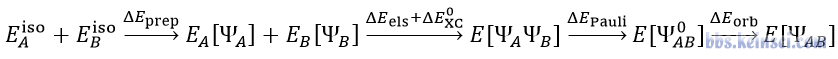
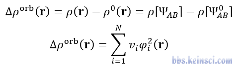
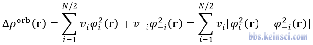
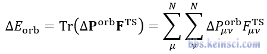
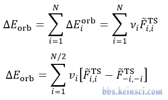
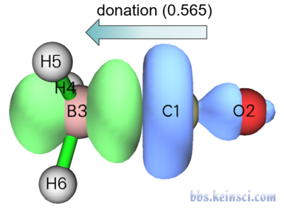
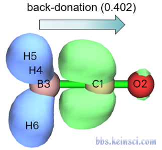
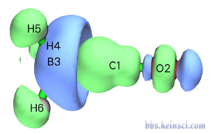
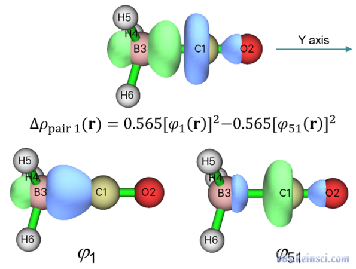
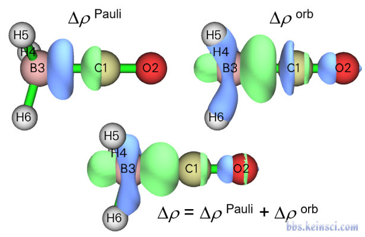
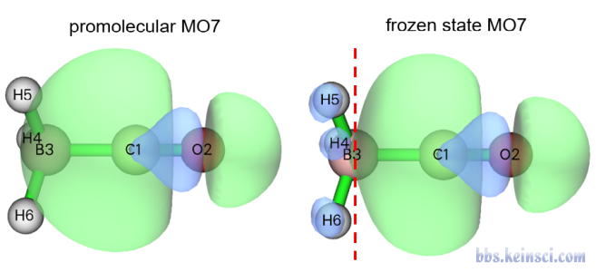
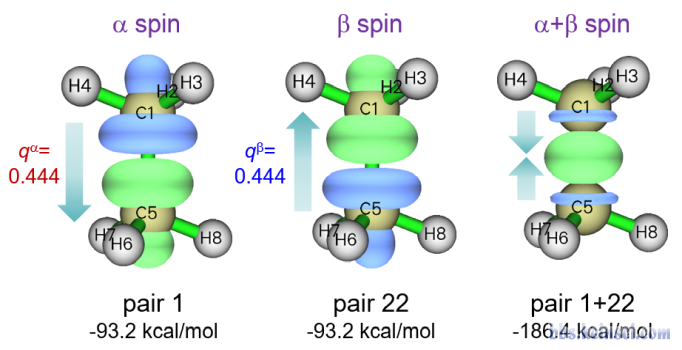
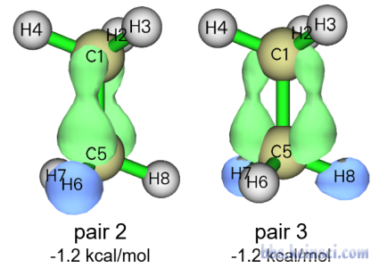
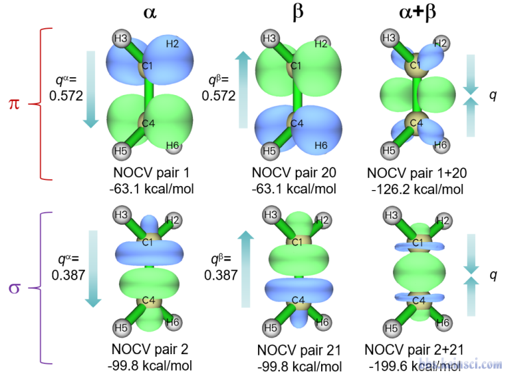
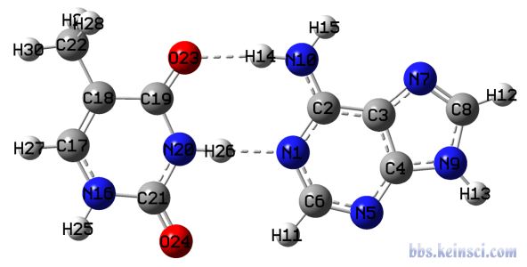
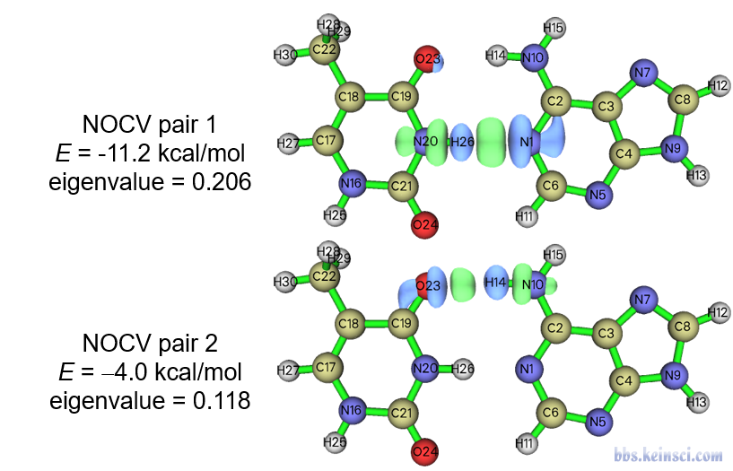
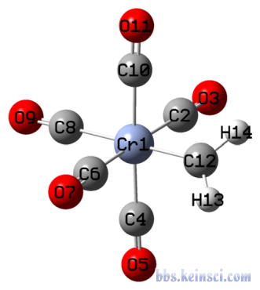
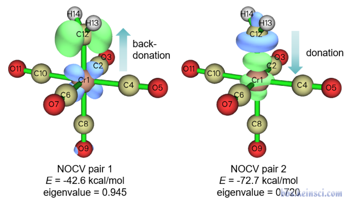
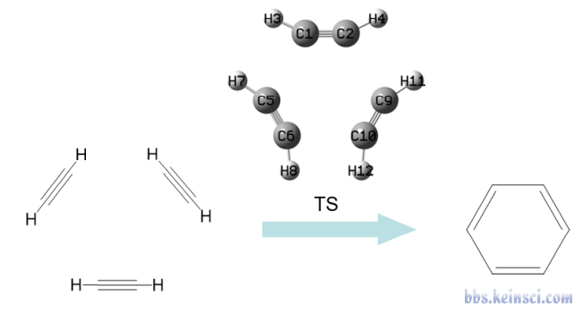
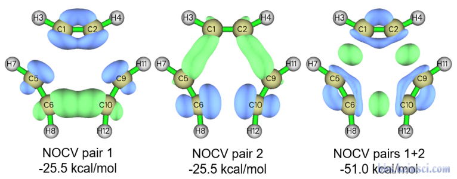
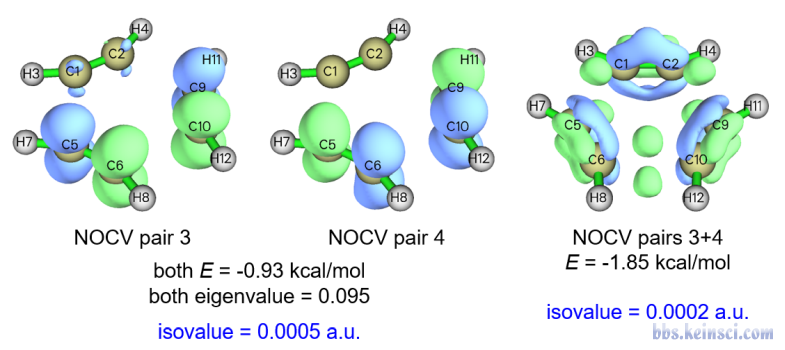
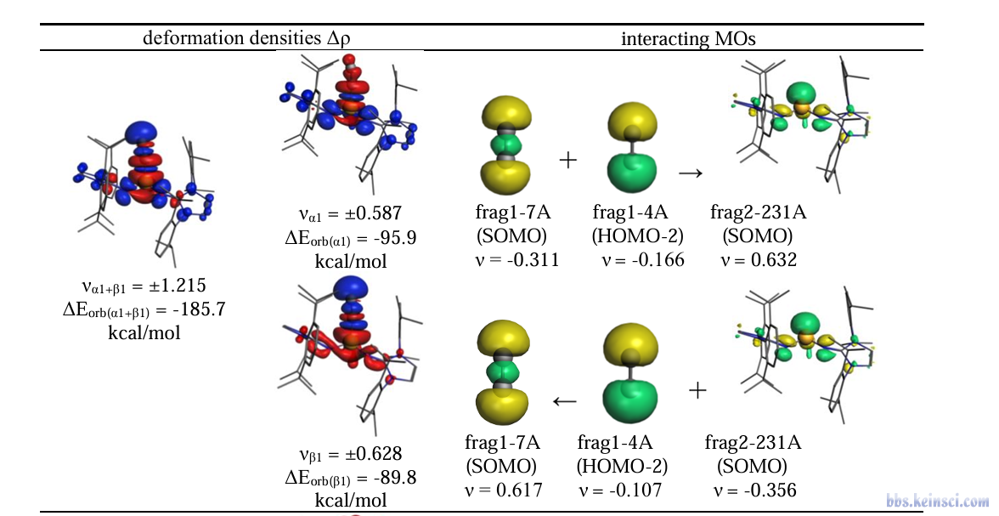
以上为本帖已下载的 22 个图片附件。